生成时间：2026-06-18T11:16:23+08:00
今日保留论文数：5
内容构成：今日新文 5 篇；补充推荐 0 篇；经典旧文精读 0 篇
高能天体物理重点
1. The Array Control and Data Acquisition software of the Cherenkov Telescope Array Observatory
- 来源：arXiv / astro-ph.HE
- 链接：https://arxiv.org/abs/2606.18798v1
- 作者：I. Oya, B. López, P. Aubert, G. Barni, P. Bauza, D. Berge, J. -P. Bolle, W. Boulakbech
- 评分：novelty 7/10，importance 9/10，relevance 10/10，final 9.75/10
- 推荐理由：CTAO阵列控制与数据采集系统论文，涉及实时告警、短时标调度和多Gbps数据流，是下一代TeV伽马射线观测的关键仪器/软件基础，相关性极高。
中文题目：切伦科夫望远镜阵列天文台的阵列控制与数据采集软件
做了什么：这篇文章介绍了 CTAO 现场运行的核心软件系统 ACADA：它负责望远镜和辅助仪器的控制、观测执行、状态监督、数据采集，以及实时科学告警生成。重点不是某个天体结果，而是 CTAO 如何把多台不同口径的切伦科夫望远镜、LIDAR、气象站和实时分析管线组织成一个能在亚分钟尺度响应瞬变事件的观测机器。文章的核心结论是：ACADA 通过短期调度器、瞬变处理器和科学告警生成管线，把高吞吐数据采集和快速重指向调度连接起来，是 CTAO 做伽马暴、引力波电磁对应体、中微子候选源和耀变体爆发等高能瞬变科学的关键基础设施。
为什么重要：CTAO 的科学能力不只取决于镜面面积和相机灵敏度，也取决于能否稳定处理每台望远镜的多吉比特每秒数据流、实时识别潜在信号，并在外部告警到来后迅速改变观测计划。对于 TeV 瞬变，晚几十秒到几分钟可能就错过最亮阶段，因此 ACADA 这样的控制与数据采集系统直接决定 CTAO 是否能把硬件灵敏度转化为瞬变发现率。
理论 / 观测 / 仪器方法价值：本文的价值主要在仪器与方法层面：它给出了 CTAO 现场软件架构中控制、监督、数据采集、实时分析、告警处理和短期调度之间的接口逻辑。对观测者而言，这决定未来 CTAO 数据的触发条件、延迟、运行模式和系统误差来源；对仪器和软件团队而言，它是大规模天文阵列如何做高可靠低延迟自动化运行的案例。
为什么应该关注：如果你关心 TeV 伽马射线瞬变、多信使天文学或下一代地基高能天文仪器，这篇文章值得读，因为它解释了 CTAO 如何从“许多望远镜”变成“一个能快速决策的天文台”。很多未来结果的选择函数、告警延迟、观测覆盖和非探测上限，都要回到 ACADA 的调度与数据处理逻辑来理解。
展开详细解读：文章讲解、背景、理论、重点章节、图表与相关工作
文章详细讲解
科学问题：CTAO 的目标是成为比现有成像大气切伦科夫望远镜阵列更大、更灵敏、能量覆盖更宽的伽马射线天文台。硬件层面包括南北两个站址、不同口径望远镜以及校准和环境监测设备；软件层面则需要把这些异构设备编排成统一的观测系统。本文讨论的问题是：在每台望远镜产生多吉比特每秒数据流、外部多信使告警随时到来、观测条件和阵列状态不断变化的情况下，CTAO 如何进行现场控制、数据采集和快速科学响应。
作者怎么做：文章围绕 ACADA 的系统角色展开。ACADA 是 CTAO 现场运行的中心组件，负责控制望远镜和辅助仪器、监督系统状态、执行观测计划、采集数据并把数据送入实时处理链。文中强调了几个关键模块：科学告警生成管线负责边采集边分析并自动产生候选科学告警；瞬变处理器负责管理内部产生的科学告警和来自其他天文设施的外部告警；短期调度器根据这些告警和当前观测状态修改正在执行或即将执行的计划。这样的设计把传统“排好队列后执行”的观测模式推进到可在亚分钟尺度调整的动态调度模式。
关键结果：本文的主要结果不是给出某个灵敏度曲线或天体显著性，而是描述了一个支撑 CTAO 瞬变科学的工程与软件架构。ACADA 需要同时满足高吞吐、低延迟、高可靠性、可监督和可恢复等要求。尤其重要的是，它把实时分析和调度闭环连接起来：当内部数据出现候选爆发，或外部设施发布伽马暴、引力波、中微子、快速射电暴或其他瞬变告警时，瞬变处理器会评估其相关性并通知短期调度器，后者可以在很短时间内重排观测。配合 CTAO 望远镜的快速转向能力，这为捕捉短时标 TeV 辐射打开空间。
局限和下一步：从摘要可见，文章更偏系统介绍而不是性能验证论文，因此读者应关注它是否给出了端到端延迟、数据丢包率、告警假阳性率、调度冲突处理、异常恢复和现场试运行结果等量化指标。如果这些指标在正文中仍处于设计或原型验证阶段，那么下一步应是用 LST-1 和后续 LST 阵列的 commissioning 数据检验系统在真实夜间运行中的稳定性。未来 CTAO 科学分析还需要把 ACADA 的运行日志、调度决策和实时质量信息纳入数据选择函数，否则瞬变统计样本的完备性和非探测上限会很难解释。
关键结果是怎么做出来的
本文最重要的证据链应从系统需求开始读：CTAO 包含多个望远镜类型、两个站址和多种辅助仪器，每台望远镜都能产生高数据率触发流。样本在这里不是天体样本，而是运行实体和数据通道：望远镜相机事件流、慢控制状态、环境监测、校准设备、内部实时分析输出以及外部告警流。文章的关键在于说明这些输入如何进入 ACADA，并被转换为可执行的观测命令和可归档的数据产品。
事件数或样本量在仪器软件论文中通常表现为吞吐量、延迟预算、并发设备数量、告警率和调度更新频率。读者应在正文表格或系统框图中查找每台望远镜的数据率、阵列总数据流、实时管线处理延迟、瞬变处理器接收外部告警的格式和速率，以及短期调度器从收到告警到下发新观测块的时间。摘要明确给出“每台望远镜多吉比特每秒数据流”和“亚分钟时间尺度修改观测”，这两个量是本文结论的核心性能指标。
统计显著性在本文中不是传统天体探测显著性，而是实时告警候选的判定问题。科学告警生成管线必须在有限延迟内估计某个天空方向或时间窗口内的过量事件是否足以触发候选告警，同时控制背景涨落造成的假阳性。读者应查看文章是否讨论了实时分析的测试统计量、触发阈值、数据质量过滤、trial factor、告警等级，以及瞬变处理器如何把内部显著性和外部告警可信度转化为调度优先级。
支撑结论的图表很可能包括 ACADA 总体架构图、数据流图、瞬变告警流图、短期调度器决策流程图和部署状态表。最应关注的是箭头方向和边界条件：哪些组件在线实时运行，哪些是离线归档；哪些决策是自动的，哪些需要操作者确认；哪些异常会导致降级运行或停止观测。对于一篇控制与数据采集软件论文，这些图比单个性能数字更能说明系统是否闭合。
主要系统误差和稳健性问题包括网络带宽瓶颈、时钟同步误差、相机触发和数据包丢失、环境监测延迟、望远镜不可用时的调度退化、实时重建相对于离线重建的偏差，以及外部告警坐标误差和延迟。稳健性检验应包括模拟高告警率、设备失联、部分阵列运行、夜间观测计划被频繁打断，以及实时管线误触发的压力测试。若正文提供了 commissioning 或集成测试结果，应优先看这些测试是否覆盖了真实运行中最可能发生的失败模式。
展开背景、理论、公式、模型、章节和图表导读
背景知识
研究对象是 CTAO 的现场软件系统，而不是单一天体。CTAO 是下一代地基甚高能伽马射线天文台，利用成像大气切伦科夫技术探测约几十 GeV 到数百 TeV 能段的伽马射线。与单台望远镜不同，CTAO 是多望远镜、多站址、多子系统组成的复杂观测设施，因此控制与数据采集软件本身就是科学产出的前提条件。
历史上，H.E.S.S.、MAGIC 和 VERITAS 等阵列已经证明成像大气切伦科夫望远镜可以研究蟹状星云、超新星遗迹、脉冲星风云、活动星系核和伽马暴余辉等高能源。但这些阵列规模较小，运行模式更多依赖预先制定的观测计划和人工介入。CTAO 的规模更大，瞬变目标更多，外部告警来源也更密集，因此必须把实时分析和自动调度提升到天文台基础设施级别。
现在值得重新看这个问题，是因为多信使天文学已经改变了高能观测的时间尺度。引力波事件、中微子候选事件、伽马暴和快速射电暴常常需要分钟级甚至秒级响应，而 TeV 辐射可能快速衰减。一个高灵敏度阵列如果不能及时转向，就会在科学上等价于低效仪器。ACADA 的意义正在于把 CTAO 的硬件能力与瞬变科学需求对齐。
该领域常见误区之一是把数据采集看成“把相机数据存下来”的工程细节。实际上，数据采集决定事件时间戳、触发信息、质量控制和后续重建可用性；控制系统决定哪些目标在什么条件下被观测；实时管线决定哪些候选会触发后续观测。这些都会进入样本选择函数。另一个误区是认为快速响应只取决于望远镜转动速度；事实上告警接收、可信度评估、调度冲突解决、命令下发、相机状态切换和数据质量确认都贡献延迟。
基础理论 / 方法脉络
成像大气切伦科夫技术的基本图像是：高能伽马射线进入地球大气后产生电磁级联，级联中相对论电子和正电子发出切伦科夫光。地面多台望远镜拍摄这个短暂光斑，通过图像形态、到达时间和多视角几何重建入射粒子的方向、能量和类型。软件系统要处理的不是连续图像，而是被触发读出的高速事件流。
对 CTAO 这样的阵列，观测不是一台望远镜的单独行为，而是阵列级行为。不同口径望远镜覆盖不同能段，某些科学目标需要尽可能多的望远镜同时参与，另一些则可在部分阵列状态下完成。ACADA 因此需要知道每个子系统的可用性、当前指向、环境条件、观测优先级和数据质量，并把这些信息反馈给调度器。
本文特定的模型假设可以理解为一个实时控制闭环：外部观测计划给出长期或夜间队列，短期调度器根据当前条件和告警更新队列，阵列控制系统执行命令，数据采集系统产生事件流，实时分析管线从事件流中寻找过量或瞬变候选，瞬变处理器把内部和外部告警合并后再次影响调度。核心量包括数据率、端到端延迟、告警显著性、目标可见性、观测优先级和阵列可用资源。
常见退化和系统误差包括实时重建精度与延迟之间的权衡、低阈值触发与假阳性率之间的权衡、外部告警定位面积与望远镜视场之间的关系、部分阵列运行时灵敏度下降，以及气象和大气透明度对能量阈值的影响。尤其是 LIDAR 和气象站并不是附属装置：它们提供的大气信息会影响能量重建、有效面积和数据质量标记，也会影响调度是否继续观测某个目标。
从统计角度看，ACADA 的实时科学告警生成不是最终发表分析的替代品，而是低延迟筛选器。它需要足够快、足够稳健，并且能把候选事件的可信度传给调度系统；但最终显著性和光谱结果通常仍要经过更完整的离线校准和重建。因此读者应区分“实时告警候选”和“离线确认探测”这两个层级。
公式与推导
可以把 CTAO 单台望远镜或子阵列的数据输入先写成事件率问题。若某能量区间内入射伽马射线微分通量为 \(\phi_\gamma(E,t)\)，有效面积为 \(A_{\rm eff}(E,\theta,q)\)，其中 \(\theta\) 是天顶角或离轴角，\(q\) 表示数据质量和大气状态，则期望信号计数为
这个式子说明控制系统记录的观测时间、指向和质量状态会直接进入科学计数估计。
背景主要来自宇宙线强子和电子。若背景率密度为 \(r_b(E,\Omega,q)\)，在角窗口 \(\Delta\Omega\) 和时间窗口 \(\Delta t\) 内的期望背景为
实时告警管线需要在很短时间内估计 \(N_b\)，因此常用近似背景模型或滑动时间窗口，而不是完整离线背景建模。
对于实时过量检验，最基本的计数似然可写为泊松形式
这里 \(n_i\) 是第 \(i\) 个时间、能量或空间 bin 的观测计数，\(\mu_{s,i}\) 与 \(\mu_{b,i}\) 分别是信号和背景期望。实时系统关心的是是否存在 \(\mu_s>0\) 的显著改进。
一个常用的似然比测试统计量为
在正则条件近似成立时，\(\sqrt{TS}\) 可近似解释为高斯显著性；但在低计数、边界参数和多重试验情况下，这个近似会失效，需要通过模拟或预先标定阈值。
若采用开区和背景控制区的传统成像切伦科夫分析，Li-Ma 显著性可写为
其中 \(N_{\rm on}\) 是源区计数，\(N_{\rm off}\) 是背景区计数，\(\alpha\) 是曝光或接受度归一化因子。实时告警可以使用类似思想，但必须控制滑动窗口和多目标搜索带来的 trial factor。
数据采集系统的吞吐可以用简单预算表示。若每个事件平均大小为 \(B_{\rm evt}\)，触发率为 \(R_{\rm trig}\)，同时运行望远镜数为 \(N_{\rm tel}\)，则阵列原始数据率近似为
摘要中提到每台望远镜多吉比特每秒数据流，说明 \(R_{\rm data}\) 是 ACADA 架构设计的硬约束。
瞬变响应的关键是端到端延迟。可把总延迟分解为
各项分别表示告警接收、可信度与可见性检查、短期调度决策、望远镜转向、仪器配置和重新开始有效采集的时间。所谓亚分钟响应要求这些项的和足够小，而不只是 \(t_{\rm slew}\) 小。
调度器可抽象成最大化效用函数的问题。对候选目标 \(j\)，可写
这里 \(w_j\) 是科学优先级，\(P_j\) 是告警可信度或探测概率，\(V_j(t)\) 是可见性函数，\(S_j(q)\) 表示当前阵列状态和大气质量下的灵敏度收益，\(C_j(t)\) 是中断当前观测或重新配置的代价。ACADA 的短期调度器本质上就是在实时约束下比较这些量。
数据质量也可进入响应函数。若大气透过率或系统效率因子为 \(\eta(t)\)，则有效面积可近似写成
这说明 LIDAR、气象站和慢控制监测并非只为归档服务，它们会影响实时灵敏度估计和是否继续观测。
最后，实时候选的假阳性控制可用全局概率表示。若单次试验的尾概率为 \(p_{\rm local}\)，独立试验数近似为 \(N_{\rm trial}\)，则
这提醒读者：实时管线若在许多时间窗口、能量窗口和天空位置上搜索，必须把 trial factor 纳入告警阈值，否则内部科学告警会被背景涨落污染。
模型拟合 / 应用方法
本文本身是仪器软件与系统架构论文，传统意义上的模型拟合不是中心内容。但 ACADA 内部的科学告警生成管线必然依赖快速重建和统计判别：拟合量通常包括事件方向、能量估计、图像形态参数、背景期望、候选源通量或过量计数，以及时间窗口内的显著性。这些量可能在实时级别采用简化校准和响应函数，之后再由离线分析重新拟合。
似然或统计量应围绕计数过量和背景拒绝构建。实时管线可使用泊松似然、Li-Ma 显著性、机器学习分类分数或预计算响应表。关键问题不是得到最精细的光谱参数，而是在给定延迟预算内判断“是否值得打断当前观测”。因此拟合模型的目标函数可能要同时考虑统计显著性、外部告警概率、可见性和科学优先级。
参数退化在这类系统中非常实际。低能阈值事件更容易受夜空背景、大气透明度和触发阈值影响；源通量衰减与响应延迟退化，因为晚到的观测会把本来明亮但快速衰减的源看成暗源；外部告警定位面积与 CTAO 视场退化，因为大定位误差会降低单次指向覆盖概率；部分阵列运行与灵敏度退化，因为不是所有望远镜都可同时参与观测。模型拟合和调度决策必须显式处理这些退化。
残差诊断在 ACADA 语境下包括两类。第一类是科学残差：实时背景模型预测和实际事件率之间的偏差、源区和控制区过量是否稳定、显著性分布在无源数据中是否服从预期。第二类是工程残差：实际延迟与预算延迟的差、实际数据率与设计吞吐的差、命令下发和设备状态回报之间的不一致。两类残差都会影响告警可信度。
系统误差包括时间同步、触发配置变化、相机增益漂移、网络拥塞、存储写入瓶颈、LIDAR 或气象数据延迟、数据库状态不一致以及调度规则中的人为优先级。实际应用中，研究者在解释 CTAO 瞬变样本时应保留 ACADA 运行元数据：目标为何被选择、是否被外部告警触发、从告警到首个有效事件的延迟是多少、当时有多少望远镜可用、数据质量如何。这些元数据会决定上限和探测率是否可与理论模型比较。
重点章节 / 结果段落怎么读
-
系统需求与 CTAO 观测场景：先看文章如何定义 ACADA 面对的对象，包括北、南站址，LST、MST、SST 等不同望远镜类型，以及 LIDAR、气象站等辅助设备。这里要抓住两个约束：高数据率和快速瞬变响应。
-
ACADA 总体架构：重点读控制、监督、数据采集和观测执行之间的模块关系。建议读者把每个组件的输入、输出和责任边界画出来，特别注意哪些信息是实时流，哪些是配置或慢控制数据。
-
科学告警生成管线：这一部分决定 CTAO 是否能自己从实时数据中发现候选瞬变。读者应查找实时重建使用何种数据级别、预期延迟、触发阈值、候选告警格式，以及它与离线分析的差别。
-
瞬变处理器与短期调度器：这是本文最有科学含义的部分。需要看外部告警如何进入系统、如何筛选和排序、如何通知短期调度器，以及短期调度器如何在当前观测、目标可见性、望远镜状态和科学优先级之间做取舍。
-
部署、commissioning 与未来扩展：最后读系统是否已经在 LST-1 或北站原型环境中集成测试，哪些功能已上线，哪些还处于开发或验证阶段。对未来使用 CTAO 数据的研究者来说，实际部署状态比概念架构更直接影响早期科学数据。
建议重点查看的图表
-
ACADA 总体架构图：看控制、监督、数据采集、实时分析、瞬变处理和调度之间的箭头方向，确认是否形成闭环。
-
数据流或带宽预算图表：看每台望远镜和阵列总数据率、数据写入路径、缓存或缓冲机制，特别关注多吉比特每秒流量下的瓶颈。
-
实时科学告警管线流程图：看事件从相机读出到候选告警生成经历哪些步骤，每一步的延迟和可能丢弃的数据是什么。
-
瞬变处理器流程图：看内部告警和外部告警是否走同一优先级评估逻辑，是否包含可信度、可见性和重复告警合并。
-
短期调度器决策示意或状态机：看正在执行的观测如何被中断、恢复或替换，是否说明人工干预和自动决策边界。
-
commissioning 或集成测试表：看哪些功能已经在 LST-1 或原型阵列中测试，测试是否包括真实夜间数据、模拟高告警率和设备异常。
-
延迟分解或性能指标表：如果正文有，重点看告警接收到首个有效事件的端到端延迟，而不是只看望远镜转向时间。
关键图表逐图导读
图 1：若为 CTAO 或 ACADA 总体架构图，横向通常展示望远镜、辅助仪器、现场软件服务和外部接口，纵向可能区分控制层、数据层和科学处理层。读图时不要只数模块，要看箭头是否说明数据、命令和状态信息分别如何流动。主要结论应是 ACADA 位于现场运行中心，而非单独的数据记录器。陷阱是把慢控制和事件数据混为一谈；它们的延迟和可靠性要求不同。
图 2：若为数据采集流程图，坐标轴可能不存在，而是用方框表示相机事件、触发、缓冲、存储、实时处理和归档路径。应重点看是否存在并行路径：一条用于低延迟实时分析，一条用于完整数据保存。读图陷阱是忽视缓冲区和错误恢复机制；在多吉比特每秒流量下，短暂网络或存储抖动也可能影响数据完整性。
图 3：若为科学告警生成管线图，应关注从原始或低级数据到候选告警的处理层级。关键问题是每一步是否需要完整校准，还是使用快速近似；候选告警输出是否包含位置、时间、显著性、通量估计、数据质量和推荐后续动作。若图中有阈值或决策节点，读者应追问这些阈值如何标定以及是否考虑多重试验。
图 4：若为瞬变处理器示意图，通常会把外部告警网络、内部科学告警、过滤器、优先级评估和短期调度器连接起来。读者应看外部告警的元数据是否被保留，例如定位误差、事件分类、概率、延迟和可见性。主要结论应是 TH 是连接多信使生态和 CTAO 本地调度的桥。陷阱是把“收到告警”等同于“立即观测”；中间还要经过可见性、科学价值和当前阵列状态判断。
图 5：若为短期调度器或观测状态机图，应看当前观测如何被打断以及是否能恢复。坐标轴若是时间线，则重点看告警到达、决策、转向、配置和采集的顺序。主要结论是亚分钟响应来自多个环节的总优化。陷阱是只关注快速转向而忽略相机配置、数据质量确认和观测块生成。
图 6：若为性能或部署状态表，应逐项查看已实现、测试中和计划中的功能。对读者最有用的是把这些状态与未来早期科学数据相连：哪些告警类型已经能自动处理，哪些仍需人工确认，哪些子系统在 LST-1 commissioning 中已有真实运行经验。
论文原图 / 可嵌入图片
Fig02
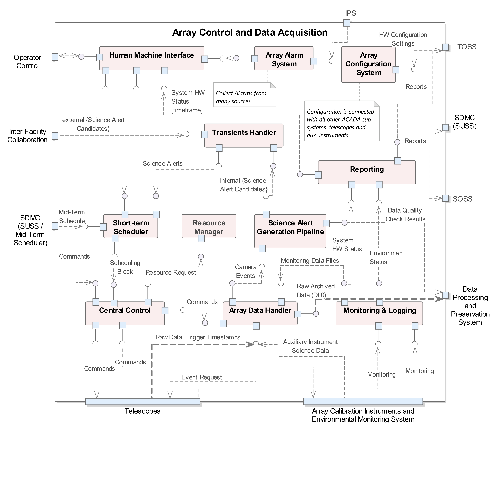
图注：Logical view of ACADA, representing the main components of the system. Only the highest-level components and the most relevant data elements and interfaces are shown. The diagram uses the UML component notation, and the basic entities are the software components, depicted as pink boxes. Blue squares are “ports” that identify the interfaces of the system. Those ports in the boundary of the ACADA identify the external interfaces of the system, and those in the components identify the internal interfaces. The dashed lines show the flow of data elements and the arrows the direction of the flow. The thicker data flow line indicates the flow of Cherenkov camera data through ACADA. The ACADA Command Line Interface and the ACADA Task Manager are not shown in this diagram.
对应解读：对应“建议重点查看的图表”中的 ACADA 总体架构图、数据流路径，以及“关键图表逐图导读”图 1/图 2 关于控制层、数据层、实时处理和接口箭头方向的解读。
入选理由：这是候选图中科学和系统信息密度最高的一张：caption 明确说明它给出 ACADA 的逻辑视图、主要组件、外部/内部接口、数据元素流向，并用加粗线标出 Cherenkov 相机数据在 ACADA 中的流动。它最能支撑日报关于 ACADA 不是单纯数据记录器，而是连接控制、数据采集、实时处理和调度接口的现场核心系统这一判断。
来源与置信度：\(arxiv_source\)；high；\(arxiv_source\) / main.tex:figure[2]
Fig01
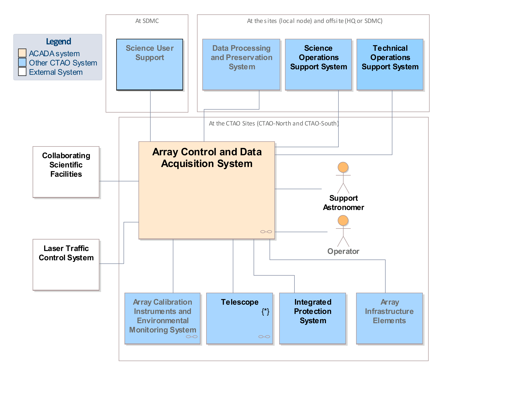
图注：ACADA system context. The systems external to ACADA are depicted in blue (when part of the CTAO System) and in white (when external to the CTAO). The stick figures represent the human actors interacting with the system.
对应解读：对应“建议重点查看的图表”第 1 项 ACADA 总体架构图，以及“关键图表逐图导读”图 1 中关于 ACADA 与 CTAO 系统、外部系统和人工操作员关系的说明。
入选理由：该图展示 ACADA 的系统上下文，区分 CTAO 内部系统、CTAO 外部系统以及人类参与者，适合帮助读者先建立 ACADA 在整个天文台运行体系中的边界和外部接口。虽然不如 Fig02 详细呈现内部数据流，但对于理解 ACADA 的现场运行角色非常关键。
来源与置信度：\(arxiv_source\)；high；\(arxiv_source\) / main.tex:figure[1]
Fig05
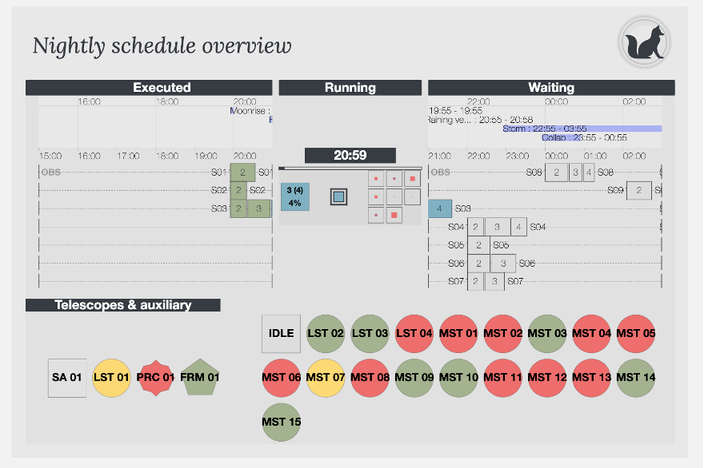
图注：The Schedule Overview Panel shows the planned SBs and OBs for the night. The main top area displays OBs as rectangles, grouped into SBs (as indicated by “S01” for the first SB). The right-hand area corresponds to blocks waiting to be executed; in the middle, the blocks currently being executed are shown; and on the left, those blocks that have finished execution are displayed. The colors represent the execution status of the blocks: Gray – waiting to be executed; Blue – currently executing; Green – finished successfully; Purple – canceled or unplanned (not shown in this example); Red – failed execution (not shown in this example). The middle section of blocks currently being executed also shows the execution phase of the SB. In this example, eight possible phases are shown, indicated by the small rectangles to the left and right of the blue observation block. The bottom part of the display shows the allocation of AEs to the blocks currently being executed, as well as those AEs not currently allocated to any running block. The different shapes represent different AE types, consistent with the visual language used in other panels.
对应解读：对应“建议重点查看的图表”第 5 项短期调度器决策示意或状态机，以及“关键图表逐图导读”图 5 中关于观测块执行、取消、失败、恢复和时间顺序的解读。
入选理由：该图虽然是调度概览面板而非完整状态机，但它直接展示了夜间计划中的 Scheduling Blocks 和 Observation Blocks、等待/执行/完成状态、执行阶段以及阵列元素分配情况。它能支撑日报中关于动态调度、观测中断或替换、阵列资源分配和运行状态可视化的讨论。
来源与置信度：\(arxiv_source\)；high；\(arxiv_source\) / main.tex:figure[5]
Fig03
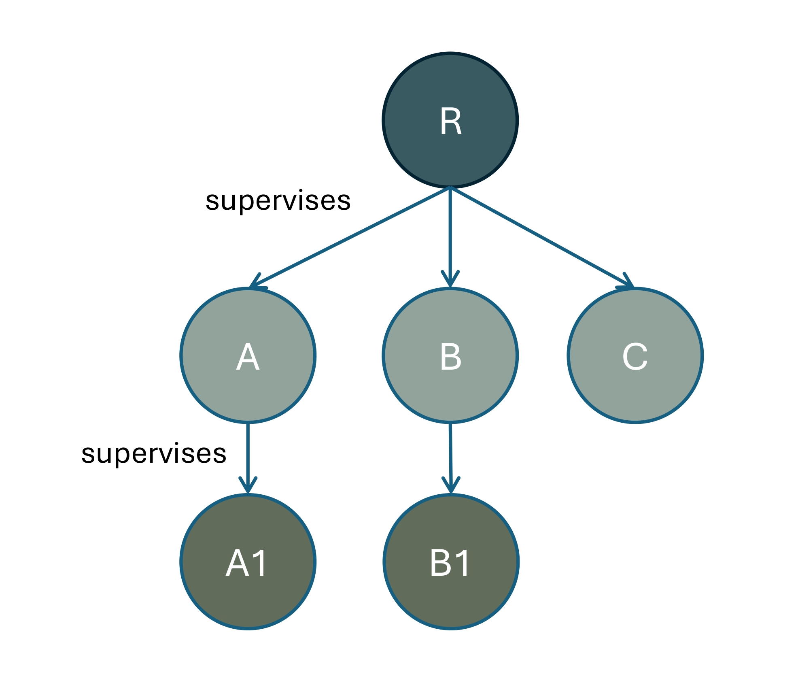
图注：Sketch of a supervision tree.
对应解读：对应“建议重点查看的图表”第 1 项中控制与监督结构，以及详细解读中关于 ACADA 监督系统状态、可靠性和异常恢复的段落。
入选理由：监督树示意图有助于理解 ACADA 如何组织设备和软件组件的状态监督，是控制系统可靠性的一部分。它与实时告警或数据吞吐的关系不如 Fig02 和 Fig05 直接，但可补充说明系统监督层级和运行状态传播机制。
来源与置信度：\(arxiv_source\)；high；\(arxiv_source\) / main.tex:figure[3]
强相关工作
这篇工作属于 CTAO 仪器与运行系统论文，应放在同类源和同类设施的背景下读。同类设施包括 H.E.S.S.、MAGIC、VERITAS 以及 LHAASO、HAWC 等宽视场高能伽马射线设施；但 CTAO 的特点是成像切伦科夫阵列的高灵敏度与较小视场、快速重指向和多站址运行。检索关键词可用“CTAO ACADA data acquisition array control”，“Cherenkov Telescope Array real-time analysis”，“CTA science alert generation pipeline”，“CTA transient handler”，“CTA short-term scheduler”。
与基础理论或科学目标相关的工作包括 CTAO 科学白皮书、CTAO 性能和灵敏度论文、成像大气切伦科夫技术综述，以及多信使瞬变观测策略论文。相反或张力点不一定来自某篇反对论文，而来自运行策略权衡：深度巡天与快速打断之间的冲突、实时告警低延迟与低假阳性率之间的冲突、自动调度与操作者安全控制之间的冲突。检索关键词可用“IACT real-time analysis false alarm”，“gamma-ray transient follow-up scheduling”，“multi-messenger alert follow-up CTA”。
同一事件 / 同类源线索：
相似工作：
（未提供）
基础理论 / 方法工作：
相反观点 / 张力线索：
（未提供）
2. A thick-shell formalism for pulsar wind nebulae based on energy conservation
- 来源：arXiv / astro-ph.HE
- 链接：https://arxiv.org/abs/2606.18912v1
- 作者：N. Bucciantini, B. Olmi
- 评分：novelty 8/10，importance 8/10，relevance 9/10，final 9.35/10
- 推荐理由：提出能量守恒的厚壳PWN演化形式，解决Crab薄壳模型不一致，并改进粒子谱和SSC计算；PWN是TeV/GeV伽马射线核心源类，方法可复用性强。
中文题目：基于能量守恒的脉冲星风云厚壳层形式主义
做了什么：这篇论文重新审视脉冲星风云，尤其是蟹状星云，常用的一区薄壳层演化模型。传统模型能较方便地把脉冲星自转能注入、星云膨胀和非热辐射谱联系起来，但在同时解释蟹状星云的结构尺度、光学丝状体回推年龄、射电泡年龄和宽波段谱时会出现长期存在的不一致。作者提出一个基于能量守恒的厚壳层形式主义，把风泡、混合物质层、外部超新星遗迹介质之间的能量耦合处理得更灵活，并配套给出粒子谱演化的高阶迎风隐式算法和全 Klein-Nishina 区域同步自康普顿辐射的快速代数化计算方法。主要结论是：在不牺牲宽波段谱拟合精度的前提下，新模型能更自然地复现蟹状星云的结构性质，并解释光学丝状体与射电泡给出不同收敛年龄这一现象。
为什么重要：脉冲星风云是研究相对论磁化风、非热粒子加速、超新星遗迹内部动力学和高能辐射过程的关键实验室。很多单源建模和族群合成都依赖薄壳一区模型；如果这个基础模型在最典型、数据最丰富的蟹状星云上都存在结构与谱的矛盾，那么由它反推的脉冲星初始自转周期、磁场演化、粒子注入谱和能量收支都会带有系统偏差。本文的重要性在于把问题定位为动力学能量分配和几何耦合的缺陷，而不是简单调参，并给出一个仍然足够低维、可用于拟合和族群研究的新框架。
理论 / 观测 / 仪器方法价值：对理论建模而言，本文提供了从薄壳近似走向厚壳、弱耦合和混合层描述的实用方程组，能更合理地处理风泡内部能量、扫掠物质层动能、辐射损失和边界做功。对观测解释而言，它给出一种同时拟合结构年龄、半径、膨胀速度和宽波段谱的路径，特别适合重新分析蟹状星云和其他演化阶段明确的年轻脉冲星风云。对方法而言，作者的粒子谱守能算法和 Klein-Nishina 同步自康普顿快速计算，对需要大量参数扫描或族群合成的工作很有实际价值。
为什么应该关注：如果你用脉冲星风云来推断中子星出生参数、正负电子注入、银河 TeV 源族群，或者把蟹状星云当作模型标尺，这篇论文值得关注。它提醒我们：一个能拟合谱能量分布的模型不一定已经正确描述了力学结构；反过来，结构年龄、壳层厚度和耦合效率可能会显著改变对粒子能量预算和磁场的理解。即使你不研究蟹状星云，本文也给出了一套可移植到风泡、超新星遗迹内源和高能源族群建模的低成本动力学工具。
展开详细解读：文章讲解、背景、理论、重点章节、图表与相关工作
文章详细讲解
科学问题：传统脉冲星风云一区薄壳模型把风云看成一个均匀压力泡，外面是很薄的扫掠壳层，脉冲星注入的自转能在内部粒子、磁场、壳层膨胀和辐射损失之间分配。这个框架非常成功，因为它把结构演化和辐射谱压缩成少数微分方程，适合拟合单个源，也适合族群合成。但是蟹状星云这类数据极其丰富的对象暴露了问题：射电泡、光学丝状体和谱能量分布对年龄、半径、速度、能量和耦合方式的要求并不完全一致。换句话说，薄壳模型能在某些观测量上拟合得很好，却难以同时尊重整体能量守恒和不同结构成分的几何事实。
作者怎么做：Bucciantini 和 Olmi 提出一个“厚壳层”形式主义，核心不是把壳层视作无厚度边界，而是允许风泡与外部扫掠物质、混合层之间存在有限厚度、非完美耦合和不同的有效收敛年龄。模型仍保留低维、可计算的优点，但把能量守恒作为组织方程的中心：脉冲星自转注入、泡内内能变化、对外做功、壳层动能、辐射损失和混合物质的几何效应必须一致。论文先给出形式主义方程和简化解析行为，再加入辐射损失与粒子谱演化，最后用蟹状星云作为检验对象。
关键结果：新模型能够解释蟹状星云中光学丝状体和射电泡给出不同收敛年龄的事实。传统薄壳图像倾向于把外层物质、可见丝状体和风泡边界捆绑为一个动力学对象，因此一旦某个结构年龄或半径不匹配，就需要牺牲谱拟合或引入不自然参数。厚壳层模型则允许混合物质层和风泡之间的耦合效率有限，因而结构观测不再被强迫落在单一薄边界上。作者还强调，宽波段谱的拟合精度与标准方法相当，但结构拟合更优，说明改进不只是数值技巧，而是改变了动力学自由度和能量通道。
局限和下一步：这仍然是半解析或低维模型，不是完整三维磁流体模拟。真实脉冲星风云存在喷流-环面结构、各向异性风、瑞利-泰勒不稳定、丝状体化学成分差异、磁场空间非均匀性和局部粒子加速区，这些在一区或厚壳低维模型中只能以有效参数表示。下一步应把厚壳形式主义系统应用到其他年轻和中年脉冲星风云，检验它是否能普遍缓解薄壳模型在半径、速度和谱之间的张力；同时需要与多维 MHD 模拟和高分辨率多波段观测对照，校准混合层厚度、耦合效率和粒子逃逸等有效参数。
关键结果是怎么做出来的
本文最重要的证据链是“蟹状星云结构与谱的联合一致性”。样本不是一个大巡天统计样本，而是以蟹状星云这一高信噪比、跨波段、结构约束丰富的原型源为标尺。作者关心的观测量包括风泡或射电泡尺度、光学丝状体的膨胀和回推年龄、整体谱能量分布、同步辐射与同步自康普顿高能成分，以及这些量对应的总能量预算。其逻辑是：如果一个模型连蟹状星云都不能同时解释，那么它用于更暗弱、更少约束源时得到的参数可能只是退化解。
模型比较的核心不是简单的“某个谱图上残差更小”，而是薄壳模型与厚壳模型在能量守恒和结构约束上的一致性比较。传统薄壳模型一般把可见壳层半径、风云边界和动力学扫掠质量合并处理，导致光学丝状体收敛年龄与射电泡动力学年龄之间的差别难以自然纳入。本文厚壳形式主义则允许风泡、混合层和外部物质之间的耦合不是无限强，从而把不同观测结构映射到不同动力学成分。读者应重点看作者如何在相同或相近辐射参数自由度下改善半径、速度和年龄的一致性。
显著性在这类理论方法论文中通常不是粒子物理式的 \(5\sigma\) 检出，而是通过守恒量闭合、残差结构、参数合理性和对蟹状星云多约束的同时满足来判断。论文中若给出不同模型的拟合表或演化曲线，关键是检查：同一组参数能否同时给出当前半径、膨胀速度、总能量、磁场强度、同步谱转折和 TeV 同步自康普顿通量；是否需要不合理的脉冲星初始周期或异常低/高的磁化比例；辐射损失加入后能量误差是否仍可控。
数值方法也是结果可信度的一部分。作者引入高阶迎风隐式粒子谱演化方案，目标是避免在冷却、注入和能量平流过程中产生明显的数值能量不守恒。对脉冲星风云而言，谱演化误差会反馈到辐射损失和总能量预算，因此不是纯粹的代码优化。同步自康普顿在全 Klein-Nishina 区域的快速代数化处理，则是为了在不牺牲高能谱精度的情况下实现大量参数扫描。稳健性应看两个方面：一是算法在强冷却和宽能段电子谱下是否保持能量守恒；二是厚壳动力学改进是否独立于某个特定数值积分技巧。
主要系统误差来自蟹状星云观测结构的定义、距离、年龄、膨胀速度、丝状体质量、磁场空间非均匀性和粒子注入谱假设。蟹状星云不是球对称均匀泡，任何一维或一区模型都要把复杂结构投影成有效半径和有效能量。本文的稳健性重点应是：当混合层厚度、耦合效率、辐射损失处理和注入谱参数变化时，厚壳模型对结构-谱张力的缓解是否仍存在，而不是只在某个精细调参点成立。
展开背景、理论、公式、模型、章节和图表导读
背景知识
脉冲星风云是年轻中子星通过相对论风向周围环境持续注入能量后形成的非热辐射泡。中心脉冲星的自转能以电子、正电子、磁场和可能的离子成分形式流出，在终止激波附近被热化和加速，随后产生从射电、光学、X 射线到 \(\gamma\) 射线的同步辐射和逆康普顿辐射。蟹状星云是这一类对象的原型，因为它距离近、年龄明确、通量高、多波段资料极其完整。
历史上，一区模型和薄壳模型之所以流行，是因为它们在物理上抓住了主要能量流：脉冲星自转变慢，释放的能量驱动泡膨胀，同时维持磁场和非热粒子谱。只要把泡内压力视作均匀，把扫掠物质压缩到薄壳，便能用少数方程计算半径、速度、磁场和粒子谱。这种模型在早期解释蟹状星云总能量和谱形方面非常有用，也成为后续大量脉冲星风云研究的标准工具。
问题在于，蟹状星云并不是一个理想薄壳。光学丝状体、射电发射区、X 射线内区、外层混合物质和超新星抛射物之间并不共享一个简单边界。观测上不同结构的膨胀回推年龄并不完全相同，射电泡和光学丝状体的几何关系也提示存在混合层和非均匀耦合。如果模型把这些结构强行压缩成同一个壳，就会把几何差异误解释为异常能量、异常年龄或异常注入史。
现在值得重新看这个问题有两个原因。第一，高能观测和数值模拟已经把脉冲星风云建模从“能拟合总谱”推进到“要同时解释结构、谱和演化”。第二，脉冲星风云已经成为银河 TeV 源、宇宙线正负电子、核心坍缩超新星环境反馈等问题的关键输入，系统误差会向更大的天体物理问题传播。蟹状星云作为标尺源的任何模型修正，都可能改变我们对其他源的参数先验。
该领域常见误区之一是把一区模型的成功等同于真实结构均匀。一区模型给出的磁场、粒子能量和年龄往往是有效量，不应直接解释为空间处处相同。另一个误区是认为谱拟合足够好就说明动力学正确；实际上，同步谱和逆康普顿谱中存在粒子谱、磁场、体积、距离和种子光场之间的退化，可能掩盖结构动力学错误。本文正是针对这种“谱好但结构不闭合”的问题。
基础理论 / 方法脉络
基本物理图像是一个能量驱动泡。脉冲星以随时间衰减的自转光度 \(L(t)\) 向星云注入能量，泡内相对论粒子和磁场形成压力 \(P\)，推动外层超新星抛射物向外运动。对相对论气体，内能与压力和体积近似满足 \(E_{\rm int}=3PV\)，因此泡的膨胀会通过 \(P\,dV\) 做功把内能转成壳层动能。薄壳模型把所有扫掠质量集中在半径 \(R\) 的薄层中，厚壳模型则允许外层物质和混合层占据有限体积。
辐射方面，脉冲星风云的低能到 X 射线主要由电子/正电子在磁场 \(B\) 中的同步辐射产生，高能 \(\gamma\) 射线则由同一批或较低能粒子对同步光子、红外光子、宇宙微波背景等进行逆康普顿散射产生。同步冷却时间随粒子洛伦兹因子 \(\gamma\) 和磁场强度增加而迅速缩短，因此高能谱形记录了近期注入和冷却历史，而射电粒子可积累更长时间，常对早期注入和体积演化敏感。
本文的关键假设是：结构演化必须显式满足能量守恒，而几何上不必把所有成分压成零厚度边界。厚壳层可被视为风泡与外界之间的过渡区，其中混合物质、丝状体和泡内非热等离子体的耦合效率有限。这样，光学丝状体的运动学年龄和射电泡的动力学年龄可以来自不同有效半径或不同耦合层，而不是被迫用单一 \(R(t)\) 解释。
观测和拟合逻辑是联合使用结构量与谱量。结构量包括当前半径、膨胀速度、不同波段或不同组分的回推年龄、可能的壳层质量；谱量包括从射电到 X 射线的同步谱、GeV-TeV 的逆康普顿谱，以及由谱峰和冷却断点推断的粒子谱与磁场。常见退化包括 \(B\) 与电子归一化之间的退化、体积与粒子密度之间的退化、年龄与注入历史之间的退化，以及距离不确定性对光度和物理尺度的共同影响。
数值上，粒子谱演化本质是能量空间中的输运方程，包含注入、辐射冷却、绝热损失和可能的逃逸。强冷却会使谱在高能端产生尖锐断点，如果离散格式不守恒，可能错误改变总粒子能量并反馈到辐射损失。同步自康普顿计算在 Klein-Nishina 区域还会显著偏离 Thomson 近似，因此快速而准确的全截面处理对拟合 TeV 谱很重要。
公式与推导
第一步是脉冲星自转能注入。若制动指数为 \(n\)，常用光度演化可写成
其中 \(L_0\) 是初始自转光度，\(\tau_0\) 是初始自转下降时标，\(t\) 是真实年龄。这个式子定义了风云动力学和粒子注入的能量源项，适用于磁偶极或更一般幂律制动的有效描述。
第二步是泡内能量守恒。把泡内非热粒子和磁场总内能记为 \(E_{\rm pwn}\)，体积为 \(V\)，压力为 \(P\)，辐射损失为 \(L_{\rm rad}\)，则薄壳或厚壳模型都必须满足
其中 \(L_{\rm leak}\) 可代表逃逸、非完美耦合或向混合层转移的有效能量通道。本文的思想是不要把这些通道隐含在错误的几何边界中，而是让能量账本闭合。
第三步是压力与体积的关系。若泡内为相对论气体，绝热指数 \(\Gamma_{\rm ad}=4/3\)，有
这个关系把谱建模得到的内能和动力学方程中的压力连接起来。厚壳层形式主义可让有效体积 \(V\) 不再只是 \(4\pi R^3/3\) 的单边界球体，而是与风泡半径、混合层厚度和填充因子有关。
第四步是壳层动力学。若扫掠层质量为 \(M_{\rm sh}\)、外半径为 \(R\)，最简单动量方程为
其中 \(\dot{R}\) 是膨胀速度，\(F_{\rm ext}\) 表示外部抛射物压力、引力或相对运动项的有效阻力。薄壳模型常把 \(M_{\rm sh}\) 和 \(R\) 唯一绑定；厚壳模型则允许不同结构成分具有不同有效半径和耦合项。
第五步是粒子谱演化。令 \(N(\gamma,t)\) 为单位 \(\gamma\) 的粒子数，\(Q(\gamma,t)\) 为注入率，\(\dot{\gamma}\) 为能量损失率，则输运方程为
这里 \(t_{\rm esc}\) 是逃逸时标。作者提出的高阶迎风隐式格式主要服务于这个方程，要求离散后粒子能量 \(\int \gamma m_e c^2 N\,d\gamma\) 的演化与冷却、注入和绝热项一致。
第六步是冷却率。同步和逆康普顿在 Thomson 极限下可合写为
其中 \(\sigma_T\) 是 Thomson 截面，\(m_e\) 是电子质量，\(U_B=B^2/(8\pi)\) 是磁场能量密度，\(U_{\rm ph}\) 是光子场能量密度。在 TeV 电子散射高频光子时需要 Klein-Nishina 修正，这正是本文快速同步自康普顿算法要处理的区域。
第七步是同步辐射可观测量。单粒子同步特征频率近似为
其中 \(e\) 是电子电荷。总同步光度可写成
这两式说明为什么谱断点可约束 \(B\)、年龄和高能粒子冷却历史，但也说明 \(N(\gamma,t)\) 与 \(B\) 存在退化。
第八步是同步自康普顿辐射。一般形式可写为
其中 \(n_{\rm syn}(\epsilon)\) 是同步种子光子数密度，\(\epsilon\) 和 \(\epsilon_s\) 分别为入射和散射后光子能量，\(d\sigma_{\rm KN}/d\epsilon_s\) 是 Klein-Nishina 微分截面。本文的代数化、可向量化算法就是为了高效计算这个积分而避免昂贵插值。
第九步是拟合诊断。对多波段通量点 \(F_i\) 和模型 \(F_i^{\rm mod}(\boldsymbol{\theta})\)，常用统计量可写为
其中 \(S_j\) 代表半径、速度、年龄等结构约束，\(\boldsymbol{\theta}\) 是模型参数。本文的关键不是只最小化谱项，而是让结构项和能量守恒同时成立。
模型拟合 / 应用方法
这类模型拟合的参数通常分为四组。第一组是脉冲星注入参数，如 \(L_0\)、\(\tau_0\)、制动指数 \(n\)、当前年龄和初始自转周期；第二组是动力学参数，如抛射物密度、扫掠质量、风泡有效体积、厚壳层厚度和耦合效率；第三组是辐射参数，如磁化比例、粒子注入谱的断点、斜率、最大能量和最小能量；第四组是环境参数，如距离、种子光子场、外部介质密度和丝状体质量。
似然或目标函数不能只由谱能量分布决定。对于蟹状星云，射电到 TeV 的通量误差很小，但系统误差和模型误差主导；如果只拟合谱，模型可能用错误的体积或磁场补偿动力学缺陷。更合理的做法是把结构约束纳入同一目标函数，包括当前半径、不同组分速度、回推年龄和总能量预算。本文的厚壳框架本质上是在扩大动力学模型的物理自由度，而不是任意增加谱参数。
主要退化关系包括：较高 \(B\) 可用较低电子数产生同样同步通量，但会增强冷却并降低逆康普顿相对强度；较大的体积会降低同步光子密度，影响同步自康普顿；较早的强注入可增加射电粒子积累，但未必匹配当前 X 射线冷却谱；厚壳层耦合效率降低可改变结构年龄而不显著破坏总谱。判断模型是否可信，要看这些退化是否被结构数据打破，而不是仅看最佳拟合曲线是否穿过数据点。
系统误差尤其重要。蟹状星云的距离、三维形状、丝状体质量、磁场填充因子和非球对称结构都会影响物理量换算。高能谱中，Klein-Nishina 抑制、外部红外光场和同步种子光场分布会改变 TeV 端形状。数值上，粒子输运格式若不守恒，会把离散误差误认为辐射损失或逃逸。因此本文强调高精度能量守恒算法，是为了让动力学结论不被谱演化误差污染。
实际应用时，可以把厚壳模型作为比薄壳模型更稳健的低维先验。对于观测资料丰富的年轻源，应同时拟合结构和谱；对于只有高能谱的未识别 TeV 源，厚壳参数可能不可完全约束，但能给出更现实的系统误差范围。模型失败的信号包括：需要极端脉冲星出生参数、无法同时匹配同步和逆康普顿峰、结构年龄仍彼此矛盾，或残差在某个波段呈系统偏离而非随机散布。
重点章节 / 结果段落怎么读
-
引言和问题设定：读者应先抓住作者批评薄壳一区模型的具体对象，不是说传统模型完全无用，而是说它在蟹状星云的结构-谱联合解释上存在未解决的不一致。重点看他们如何描述光学丝状体与射电泡收敛年龄的差别，以及为什么这会挑战单一薄壳边界假设。
-
厚壳层形式主义方程：这是论文核心。建议逐项检查能量守恒方程中包含哪些能量库和通道：脉冲星注入、内能、壳层动能、对外做功、辐射损失、混合层或弱耦合项。读者应特别注意哪些量是可观测约束，哪些是有效参数。
-
简化解与包含辐射损失的解：这部分用于建立物理直觉。简化解通常展示厚壳模型相对薄壳模型如何改变半径、速度和压力随时间的标度；加入辐射损失后，则连接到实际谱演化。读者应看这些解是否在合理极限下退化为传统结果。
-
粒子谱和辐射算法：作者提出高阶迎风隐式方案和 Klein-Nishina 同步自康普顿快速算法。这里不要只当作技术附录略过，因为能量守恒的数值误差会直接影响本文论点。应检查算法如何处理冷却断点、能量网格和平流方向。
-
蟹状星云应用与讨论：这是验证部分。重点读模型如何同时复现结构和宽波段谱，以及作者怎样解释光学丝状体与射电泡年龄差异。讨论部分则应关注这种厚壳解释对其他风泡和脉冲星风云建模的可推广性，以及作者承认的几何和多维效应限制。
建议重点查看的图表
-
动力学演化曲线：看半径、速度、压力或能量随时间的曲线，比较厚壳模型与薄壳模型在蟹状星云年龄附近的差别，尤其是是否同时落在观测结构约束范围内。
-
能量预算图或表：检查脉冲星累计注入能量如何分配到粒子、磁场、壳层动能、辐射损失和混合层。关键是能量闭合误差是否小，以及是否避免了不合理的隐藏能量库。
-
宽波段谱能量分布图：看射电、红外、光学、X 射线、GeV 和 TeV 数据点与模型线。重点不是模型线是否大致穿过数据，而是同步与同步自康普顿两部分是否在同一组 \(B\) 和粒子谱下成立。
-
粒子谱演化或冷却诊断图：看注入谱、演化后谱、冷却断点和高能截断。若有不同数值格式对比，应检查高能端是否出现数值扩散或能量不守恒伪迹。
-
薄壳与厚壳对比图：看同样蟹状星云约束下，两种模型在结构年龄、半径和谱拟合上的差异。最关键的是厚壳模型是否解决结构张力，而不是仅仅增加自由参数后改善 \(\chi^2\)。
-
Klein-Nishina 同步自康普顿算法验证图：若论文给出与标准积分或插值方法的对比，应看 TeV 端误差、计算速度和残差分布。Klein-Nishina 区域的偏差会直接影响高能谱解释。
关键图表逐图导读
图 1：若为模型几何或示意图，横向应理解为从中心脉冲星风、终止激波、非热风泡到厚混合壳层和外部抛射物的结构分区。读图时不要把边界线当作真实锐利界面；它们代表有效半径和能量耦合区。主要结论是厚壳模型把射电泡、光学丝状体和动力学扫掠层解耦到一定程度。
图 2：若为半径或速度随时间演化图，横轴通常是年龄 \(t\)，纵轴是 \(R(t)\)、\(\dot{R}(t)\) 或相关动力学量。数据带可能代表蟹状星云当前半径、速度或回推年龄约束，模型线代表薄壳与厚壳方案。读图陷阱是只看当前点是否匹配，而忽略曲线斜率；斜率决定回推年龄和加速历史。
图 3：若为能量分配图，横轴多为时间，纵轴为能量或光度。应区分累计注入能量、泡内粒子能、磁能、壳层动能和辐射损失。模型若声称基于能量守恒，图中各能量通道之和应与累计注入一致到数值误差范围内。陷阱是把未画出的逃逸或耦合项忽略，从而误判守恒性。
图 4：若为宽波段谱能量分布，横轴是频率或光子能量，纵轴常为 \(\nu F_\nu\) 或 \(E^2 dN/dE\)。同步辐射通常主导低能至 X 射线，同步自康普顿和外部逆康普顿主导 GeV-TeV。读者应看模型是否同时匹配同步峰、冷却断点和 TeV 端，而不是只关注某个波段的视觉吻合。
图 5：若为电子/正电子谱，横轴是 \(\gamma\) 或粒子能量，纵轴是 \(N(\gamma)\) 或 \(\gamma^2N(\gamma)\)。注入谱与演化谱的差别体现冷却和绝热损失。读图时要注意高能端是否受网格边界或数值扩散影响；强冷却区的谱斜率是检验输运算法的重要位置。
图 6：若为数值算法或 Klein-Nishina 计算验证图，通常会显示相对误差、残差或与标准积分结果的比值。横轴可能是光子能量或粒子能量，纵轴是误差百分比。关键是 TeV 或 Klein-Nishina 过渡区是否保持小误差，因为这里最容易被 Thomson 近似或粗插值误导。
论文原图 / 可嵌入图片
Fig01
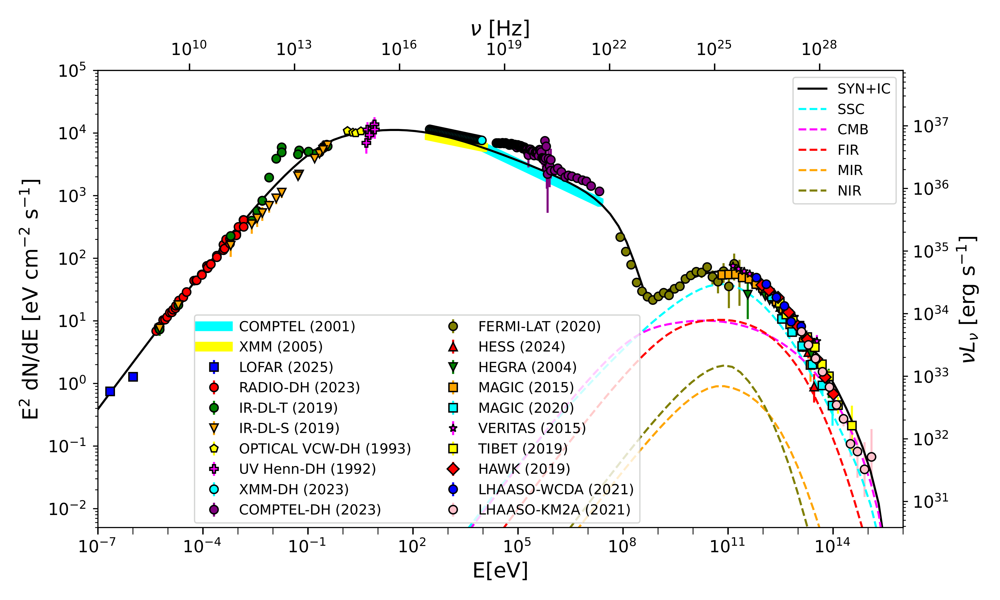
图注：Spectral energy distribution in the Crab nebula \(\citep{Aharonian_Ait+24a}\) and thick-shell model. The black solid line represents the expected total flux from the model of Tab~\(\ref{table:1}.\) Dashed lines are Inverse Compton on: self-synchrotron (SSC, cyan), CMB (magenta), FIR (red), MIR (orange), NIR (olive). LOFAR \(\citep{Arias_Timmermann+25a}\); RADIO-DH (compilation of radio data from \citet{Dirson_Horn23+}); IR-DL-T and IR-DL-S (total flux and estimated power-law synchrotron component from \citet{deLooze_Barlow+19a}); OPTICAL-VC-DH (original data from \(\citet{Veron-Cetty_Woltjer93a}\) with new extinction from \citet{Dirson_Horn23+}); UV-Henn-DH (original data from \(\citet{Hennessy_OConnel+92a}\) with new extinction); XMM \(\citep{Kirsch_Briel+05a}\); COMPTEL \(\citep{Kuiper_Hermsen+01a}\); XMM-DH and COMPTEL-DH (same data but rescaled to NUSTAR and INTEGRAL by \citet{Dirson_Horn23+}); FERMI-LAT \(\citep{Abdollahi+Acero+20a,Aharonian_Ait+24a}\); HESS \(\citep{Aharonian_Ait+24a}\); HEGRA \(\citep{Aharonian_Akhperjanian+04a}\); MAGIC \(\citep{Aleksic_Ansoldi+15a,Magic+20a}\); VERITAS \(\citep{Meagher_VERITAS51a}\); TIBET \(\citep{Amenomori_Bao+19a}\); HAWC \(\citep{Abeysekara_Albert+19a}\); LHAASO \(\citep{Lhaaso+21a}.\)
对应解读：对应“建议重点查看的图表”第 3 项宽波段谱能量分布图，以及“关键图表逐图导读”中关于同步辐射、SSC/IC 分量和 TeV 端 Klein-Nishina 区域的解读。
入选理由：这是候选集中唯一真实存在的论文图，并且直接展示蟹状星云从射电、红外、光学、X 射线、GeV 到 TeV/PeV 的宽波段 SED 数据与厚壳模型总谱。图中不仅有总模型线，还分解了 SSC、CMB、FIR、MIR、NIR 等逆康普顿分量，最能检验日报强调的同一组磁场和粒子谱是否同时解释同步峰与高能 IC 峰。虽然它不是动力学半径或能量预算图，但对论文声称“谱拟合精度与标准方法相当，同时结构拟合更优”的核心论证非常关键。
来源与置信度：\(arxiv_source\)；high；\(arxiv_source\) / \(article_1.tex\):figure[1]
强相关工作
本文直接处在脉冲星风云半解析演化模型与蟹状星云精细建模的交叉点。Kennel 与 Coroniti 的蟹状星云 MHD 模型奠定了相对论风、终止激波和下游流的经典图像；后来的 Chevalier、Reynolds、Gelfand、Slane 等工作发展了薄壳或一区谱演化模型，并将其用于单源拟合和族群解释。建议检索关键词包括 “pulsar wind nebula one-zone model”, “Crab Nebula thin shell model”, “PWN spectral evolution”, “PWN energy conservation”。
与本文形成张力的并不是某一篇完全相反的论文，而是传统薄壳模型的隐含假设：所有扫掠物质、可见丝状体和风泡边界可以用一个动力学半径代表。多维 MHD 模拟和高分辨率观测早已显示脉冲星风云存在各向异性、混合、不稳定和空间非均匀冷却；本文的价值在于把这些复杂性压缩成仍可拟合的厚壳有效模型。建议进一步检索 “Crab filaments expansion age”, “Crab radio bubble convergence age”, “Rayleigh Taylor instability pulsar wind nebula”, “Klein Nishina SSC Crab Nebula”。
同一事件 / 同类源线索：
- https://arxiv.org/abs/2606.18912
- https://arxiv.org/pdf/2606.18912
- https://arxiv.org/abs/astro-ph/0601081
相似工作：
- https://arxiv.org/abs/astro-ph/0601081
- https://ui.adsabs.harvard.edu/abs/1984ApJ...283..710K/abstract
- https://ui.adsabs.harvard.edu/abs/1984ApJ...283..694K/abstract
基础理论 / 方法工作：
- https://ui.adsabs.harvard.edu/abs/1984ApJ...283..710K/abstract
- https://ui.adsabs.harvard.edu/abs/1984ApJ...283..694K/abstract
- https://arxiv.org/abs/astro-ph/0601081
相反观点 / 张力线索：
（未提供）
3. Short-Duration Gamma-ray Burst and Afterglow Rates in the Rubin and Roman Era
- 来源：arXiv / astro-ph.HE
- 链接：https://arxiv.org/abs/2606.18468v1
- 作者：Tzvetelina Dimitrova, Nathaniel Butler
- 评分：novelty 7/10，importance 8/10，relevance 9/10，final 9.05/10
- 推荐理由：短GRB/BNS并合后余辉和孤儿余辉在Rubin/Roman时代的探测率预测，直接关系GRB喷流张角、BNS率张力和多信使随访策略，值得阅读。
中文题目：Rubin 与 Roman 时代的短时标伽马射线暴及余辉发现率
做了什么：这篇文章把双中子星并合种群、短时标伽马射线暴喷流几何和余辉辐射模型连在一起，估算 Vera C. Rubin Observatory 的 LSST 巡天和 Nancy Grace Roman Space Telescope 在未来能发现多少短暴余辉，尤其是没有 prompt 伽马触发的“孤儿余辉”。核心结论是：LSST 每年大约可发现 \(0.9^{+0.5}_{-0.3}\) 个轴上短暴余辉和 \(1.3^{+0.9}_{-0.5}\) 个孤儿余辉，样本虽小但有望约束短暴喷流开角和结构；Roman 的深度更适合做引力波事件的定点深度跟踪。另一方面，即使进入 aLIGO O5，落在 BNS 探测距离内且能被 LSST 或 Roman 发现的余辉预计仍少于每年一个，因此若 O5 继续没有确认 BNS 事件，将对现有短暴—BNS 关联模型提出压力。
为什么重要：短时标伽马暴通常被认为来自双中子星并合，但观测到的短暴率、LIGO/Virgo/KAGRA 的 BNS 并合率和真实喷流准直角之间仍存在张力。孤儿余辉是打破这一张力的关键，因为它们来自视线不在伽马射线喷流核心内、但余辉在较晚时刻因减速和横向可见性而被光学/红外巡天看见的事件。本文重要之处在于，它没有只问“能否看到某个 GW170817 类事件”，而是从 BNS 种群出发，统一估计 prompt 短暴、轴上余辉、离轴孤儿余辉和引力波触发余辉的发现率。
理论 / 观测 / 仪器方法价值：对理论而言，本文给出喷流 beaming、结构化喷流和 BNS merger rate 之间的可检验连接；对观测而言，它把 LSST 宽场高 cadence 巡天与 Roman 深场/定点跟踪的互补性量化；对方法而言，它展示了如何把 BNS population synthesis、伽马射线选择函数、AfterglowPy 余辉光变曲线和巡天探测阈值合成一个概率世界模型。它的价值不只是给出发现率数字，而是指出未来几年哪些“非探测”本身也会变成有信息量的约束。
为什么应该关注：如果你关心多信使天文学、短暴喷流结构、BNS merger rate 或 LSST/Roman 的瞬变科学规划，这篇文章给的是实际可执行的预期：每年大概能捞到几个事件、哪些事件更可能来自盲巡天而不是 GW 触发、以及多少年后样本才足以真正约束喷流。它还提醒我们，O4 没有新的确认 BNS 已经让短暴率与 BNS 率的关系更紧；如果 O5 仍然空缺，问题可能不再只是“运气不好”，而是需要重新审视短暴母体、喷流角分布、探测选择效应或 LIGO/Virgo/KAGRA 的有效体积假设。
展开详细解读：文章讲解、背景、理论、重点章节、图表与相关工作
文章详细讲解
科学问题：短时标伽马射线暴通常被解释为双中子星并合后形成相对论喷流，只有视线落在喷流核心附近时才会看到 prompt \(\gamma\) 射线。GW170817/GRB 170817A 证明了这个图像至少在一个近邻事件上成立，但从率的角度看，观测短暴率、BNS 并合率和喷流 beaming correction 之间仍然没有完全闭合。O4 没有新增确认 BNS 事件，使得“为什么短暴不少、BNS 却不多”这个问题更加尖锐。本文要回答的是：在 Rubin/LSST 与 Roman 时代，光学/近红外余辉发现率能否反过来约束短暴喷流和 BNS 种群？
作者怎么做：文章构造了一个概率化的短暴世界模型，从源端 BNS merger population 出发，给每个事件抽取距离、视角、喷流能量、环境密度、微物理参数和喷流结构，再用 AfterglowPy 计算多波段余辉光变曲线。随后把这些模拟事件通过不同观测策略的选择函数，包括 LSST 的宽场盲巡天、LSST 或 Roman 对 GW 候选区域的跟踪，以及 Roman 的深度指向观测。模型区分了有 prompt 伽马触发的轴上事件和没有 prompt 触发但余辉可见的孤儿余辉，因此能直接评估孤儿余辉对 beaming 的约束能力。
关键结果：文章给出的代表性数值是 LSST 每年约发现 \(0.9^{+0.5}_{-0.3}\) 个轴上余辉和 \(1.3^{+0.9}_{-0.5}\) 个孤儿余辉。这个数量不大，但在数年尺度上可以积累到足以比较不同喷流开角或结构模型的样本。Roman 的优势不在于大面积盲扫，而在于更深的近红外灵敏度，适合在已有 GW 触发或高优先级候选区域中寻找更暗、更红或更远的余辉。对 aLIGO O5 范围内的 BNS 事件，作者预测可被 LSST 或 Roman 发现的余辉仍少于每年一个，说明 GW 触发余辉样本增长会相当慢。
局限和下一步：这些发现率依赖于喷流角分布、结构化喷流形式、BNS merger rate、介质密度、余辉微物理参数以及巡天真实 cadence 和候选筛选效率。孤儿余辉还会受污染源影响，例如核心坍缩超新星、活动星系核耀发和其他快变暂现源。下一步真正关键的是把 LSST 早期实际 alert stream 的选择函数、机器学习筛选效率、Roman 跟踪调度和 LIGO/Virgo/KAGRA 的 skymap 体积后验纳入同一层级贝叶斯框架，而不只是对理想化阈值做发现率积分。
关键结果是怎么做出来的
本文最重要的证据链从模拟样本的源端选择开始。作者不是从已观测短暴外推，而是以 BNS merger population 为底层母体，给事件抽取宇宙学距离、取向和喷流参数，再由 prompt \(\gamma\) 射线探测条件决定哪些会进入短暴样本、哪些只可能在余辉阶段出现。这样的设计使样本天然包含轴上短暴余辉、离轴孤儿余辉和 GW 触发但电磁信号很弱的事件三类对象。事件数不是实际观测数，而是通过大量蒙特卡洛世界模型在不同观测策略下统计得到的期望发现率。
发现率的计算核心是把每个模拟事件的光变曲线与巡天探测窗口相交。AfterglowPy 负责给出给定视角、能量、介质密度和微物理参数下的光学/近红外通量，LSST 或 Roman 的限制星等、曝光策略、cadence 和覆盖面积决定该事件是否达到可发现标准。LSST 的主要贡献来自大视场和重复扫描，因此既能碰到轴上短暴余辉，也能积累孤儿余辉；Roman 的主要贡献来自深度，因此在小面积定点跟踪中能探测更暗的余辉尾端。
统计不确定性主要表现为发现率区间，例如 LSST 轴上余辉 \(0.9^{+0.5}_{-0.3}\,{\rm yr}^{-1}\) 与孤儿余辉 \(1.3^{+0.9}_{-0.5}\,{\rm yr}^{-1}\)。这些区间应理解为种群参数、喷流模型和蒙特卡洛抽样共同传播后的预测范围，而不是单纯泊松误差。读者应特别关注论文中比较不同喷流模型和观测方案的发现率图表：如果某个模型显著提高孤儿余辉与轴上余辉比值，它通常对应更宽的有效可见角、更强的翼部能量或更有利的环境参数。
关于显著性，本文的逻辑不是报告某个观测信号的 \(5\sigma\) 检出，而是问未来样本能否区分率模型。支持结论的关键图表应包括发现率随喷流参数变化的分布、LSST 与 Roman 的探测距离/峰值星等分布、以及限制在 aLIGO O5 BNS horizon 内后的发现率比较。若 O5 继续没有确认 BNS，而短暴发现和余辉候选仍按预期出现，那么模型比较会集中到 BNS rate、短暴母体纯度和 beaming correction 这几个参数上。
系统误差方面，最敏感的是喷流结构、环境密度分布和观测选择函数。余辉峰值时间和峰值亮度对视角非常敏感，因此 cadence 漏检会直接改变孤儿余辉率。污染源剔除效率也会影响“可发现”与“可确认”的差别：达到星等阈值只是第一步，还需要颜色演化、衰减时间尺度、宿主星系偏移和可能的高能/GW 关联来分类。本文的稳健性价值在于用多个喷流模型和观测场景重复计算，而不是把单一 fiducial 模型的数字当成预测定值。
展开背景、理论、公式、模型、章节和图表导读
背景知识
研究对象是短时标伽马射线暴及其余辉。短暴通常持续时间 \(T_{90}\lesssim 2\,{\rm s}\)，谱更硬，宿主星系类型多样，长期被认为与致密双星并合有关。余辉来自相对论喷流与外部介质相互作用形成的同步辐射，覆盖 X 射线、光学、红外和射电。与 prompt 发射相比，余辉持续更久，也更容易暴露喷流几何和观察角。
历史上，短暴与 BNS 的联系主要来自宿主星系偏移、缺少普通长暴型超新星、kilonova 候选以及理论上的紧致星并合模型。GW170817 与 GRB 170817A 是转折点：它同时给出引力波、弱 prompt \(\gamma\) 射线、千新星和长期上升后下降的非热余辉，并通过 VLBI 运动支持结构化相对论喷流。然而一个近邻事件不能单独决定整个短暴种群的喷流开角、角向能量结构和率归一化。
现在值得重新看这个问题，是因为两个观测条件同时变化。第一，LIGO/Virgo/KAGRA 的运行轮次不断推进，但 O4 没有新增确认 BNS，使得 BNS merger rate 后验和短暴率比较更受关注。第二，LSST 将提供前所未有的光学时域覆盖，Roman 将提供深近红外成像能力；两者都可能在没有 prompt 高能触发的情况下发现离轴余辉。孤儿余辉正是测量喷流 beaming 的关键观测通道。
该领域常见误区之一是把短暴率直接等同于 BNS merger rate。实际上，观测短暴率需要乘上 beaming factor、探测器通量阈值、红移选择函数和母体纯度；BNS merger rate 则来自 GW 探测体积和波形选择函数。另一个误区是认为 LSST 只要够深就能看到大量孤儿余辉。孤儿余辉通常较暗、峰值更晚、演化时间尺度与其他暂现源重叠，而且分类确认成本很高，因此 cadence、颜色信息和候选筛选同样关键。
基础理论 / 方法脉络
基本物理图像是：BNS 并合后中心引擎释放能量，形成超相对论喷流。若观察角 \(\theta_{\rm obs}\) 位于喷流核心角 \(\theta_{\rm c}\) 附近，观测者会看到强烈 Doppler 增亮的 prompt \(\gamma\) 射线，并在随后看到轴上余辉。若 \(\theta_{\rm obs}\) 较大，prompt 发射被 relativistic beaming 压低，但喷流在外介质中减速后辐射锥变宽，余辉可能在较晚时刻进入视野，这就是孤儿余辉。
余辉辐射通常用外激波同步辐射描述。关键参数包括各向同性等效能量 \(E_{\rm iso}\)、外部数密度 \(n\)、电子能量分数 \(\epsilon_e\)、磁场能量分数 \(\epsilon_B\)、非热电子谱指数 \(p\)、喷流结构参数和观察角 \(\theta_{\rm obs}\)。这些参数共同决定峰值时间、峰值通量、谱断频位置和衰减斜率。AfterglowPy 这类工具的作用是数值积分结构化喷流在不同角向区域上的辐射贡献。
观测方法上，LSST 的优势来自大视场、多次访问和多滤光片光变曲线。它更像是在大样本 alert stream 中寻找符合快衰减、宿主偏移和颜色演化特征的候选。Roman 的优势是近红外深度和空间分辨率，尤其适合在 GW skymap 中选定高概率星系或区域做深度跟踪。两者的发现率不能只用单次曝光极限衡量，还要考虑天区覆盖、重访间隔、天气、太阳距限制和后续确认能力。
常见退化关系包括 \(E_{\rm iso}\) 与 \(n\) 对峰值亮度的退化、\(\epsilon_B\) 与 \(n\) 对同步辐射谱断的退化、\(\theta_{\rm obs}\) 与喷流核心角对峰值时间的退化，以及距离与内禀能量对通量归一化的退化。对发现率而言，最危险的系统误差不是单个参数的不确定，而是选择函数：一个余辉是否被“探测到”、是否被“识别为短暴余辉”、是否能被“纳入统计样本”，这三个层级的效率并不相同。
公式与推导
从源端率开始，可把共动体积内的 BNS 并合率写成
\(R_{\rm BNS}(z)\) 是源系共动并合率密度，\((1+z)^{-1}\) 把源系时间换成观测者时间，\(dV_{\rm c}/dz\) 是共动体积元。这一步决定了模拟世界中每个红移壳层应产生多少 BNS 事件。
喷流可见性的最简单近似是 top-hat beaming fraction：
\(\theta_{\rm j}\) 是喷流半开角。若只有 \(\theta_{\rm obs}<\theta_{\rm j}\) 的事件能触发 prompt 短暴，则观测短暴率大致为
\其中 \(\eta_{\gamma}\) 是 BNS 产生成功短暴喷流的比例，\(P_{\rm det}^{\gamma}\) 是高能探测器通量阈值和天空覆盖的选择函数。
结构化喷流中常用角向能量分布，例如高斯型
\其中 \(E_{\rm c}\) 是核心能量尺度，\(\theta_{\rm c}\) 是核心角。它比 top-hat 更自然地产生离轴弱 prompt 发射和较亮孤儿余辉；本文用这类喷流假设通过 AfterglowPy 生成光变曲线。
余辉外激波的 Blandford-McKee 标度给出 bulk Lorentz factor 随观测时间的近似演化：
\其中 \(m_{\rm p}\) 是质子质量，\(c\) 是光速，\(t\) 是观测时间。离轴余辉通常在 \(\Gamma^{-1}\sim \theta_{\rm obs}-\theta_{\rm c}\) 时显著变亮，因此峰值时间可估为
\这说明孤儿余辉发现率对 cadence 和视角分布非常敏感。
同步辐射观测通量可概念化写成
\其中 \(D_{\rm L}\) 是光度距离，\(\delta\) 是 Doppler 因子，\(j_{\nu'}\) 是共动系发射率。AfterglowPy 数值完成角向结构、到达时延和谱段的积分；观测上则把 \(F_{\nu}\) 转成星等并与限制星等比较。
一次巡天观测的探测条件可写成
\其中 \(F_{\nu,0}\) 是零点通量，\(m_{\rm lim}\) 是该滤光片和曝光条件下的限制星等。若要求至少 \(N_{\rm visit}\) 次探测，则单事件发现概率可写成
\其中 \(I\) 是指示函数，\(i\) 遍历巡天访问。
最终发现率是对种群参数 \(\boldsymbol{\phi}\) 和事件参数 \(\boldsymbol{x}\) 的积分：
\这就是本文预测 LSST 与 Roman 发现率的核心统计对象。
若未来实际观测到 \(k\) 个候选，可用泊松似然检验模型发现率 \(\lambda\)：
\例如多年 LSST 孤儿余辉非探测会压低允许的宽喷流或亮翼部模型，而若观测数显著高于 \(\lambda\)，则可能意味着 BNS rate、更宽喷流、额外母体或选择函数估计需要修正。
模型拟合 / 应用方法
这类工作的拟合对象不是单条光变曲线，而是发现率和事件分类的层级模型。底层参数包括 \(R_{\rm BNS}\)、喷流开角或核心角分布、结构化喷流能量尺度、介质密度分布、微物理参数分布和短暴高能探测效率。给定这些参数后，模型预测 prompt 短暴数、轴上余辉数、孤儿余辉数以及 GW 触发余辉数；未来观测样本可通过多类别泊松似然或层级贝叶斯后验来反推这些参数。
参数估计中最明显的退化是 \(R_{\rm BNS}\) 与 beaming fraction。较高的 BNS rate 配合较窄喷流，可能产生与较低 BNS rate 配合较宽喷流相似的 prompt 短暴率；孤儿余辉数能帮助打破这一退化，因为宽喷流或结构化亮翼通常会提高离轴可见概率。另一个退化是余辉亮度参数与巡天选择函数：较高 \(E_{\rm iso}\) 或较高 \(n\) 可以补偿较浅的限制星等，但会改变峰值时间和颜色演化。
实际拟合时，残差不应只看总事件数，还要看峰值星等分布、峰值时间分布、颜色演化、宿主红移/距离分布和与 GW skymap 的空间一致性。如果模型给出正确总数但预测的事件普遍太亮或太早峰值，说明喷流/介质参数仍可能错误。LSST alert 样本还需要把分类器混淆矩阵纳入似然，否则污染源会把“候选数”错误地解释成“真实孤儿余辉数”。
系统误差主要来自三处：一是高能短暴样本的选择函数和红移不完备性；二是 BNS merger rate 的 GW selection function，包括探测器灵敏度、占空比和参数估计阈值；三是光学/红外 follow-up 的真实执行效率。模型可能失败的场景包括：短暴有显著非 BNS 母体、BNS 中只有一部分能成功发射相对论喷流、余辉微物理参数不是独立同分布、或孤儿余辉被污染源严重淹没。本文的预测应视为未来用真实 LSST/Roman 样本做层级拟合的先验基准，而不是最终测量。
重点章节 / 结果段落怎么读
数据/样本与世界模型部分应首先阅读。重点看作者如何从 BNS merger population 生成短暴事件，红移、视角、喷流参数和余辉微物理参数分别采用什么分布。这里决定了发现率结果的物理含义：它不是经验外推，而是从源端到观测端的前向模拟。
余辉建模方法部分是第二个重点。读者应检查 AfterglowPy 的输入喷流模型、光学/红外滤光片设置、峰值判断和探测阈值定义。特别要看轴上余辉和孤儿余辉如何分类，是否只依据 prompt detectability，还是同时考虑视角和光变形态。
观测策略部分应与 LSST 和 Roman 的实际能力对照阅读。LSST 的宽场 cadence、限制星等、天区覆盖和多次探测要求会强烈影响孤儿余辉率；Roman 的深度和小视场意味着它更适合作为 targeted follow-up。读者应留意作者是否区分盲巡天发现和 GW 触发跟踪发现。
主结果部分应关注发现率表格和不同喷流模型之间的比较。关键数字是 LSST 轴上余辉 \(0.9^{+0.5}_{-0.3}\,{\rm yr}^{-1}\)、孤儿余辉 \(1.3^{+0.9}_{-0.5}\,{\rm yr}^{-1}\)，以及 O5 BNS 距离范围内 LSST/Roman 可发现事件少于每年一个的结论。不要只看 fiducial 值，还要看模型间散布。
讨论和稳健性检验部分应重点读 O4/O5 BNS 非探测对模型的含义。作者的一个核心判断是：若 O5 继续没有确认 BNS，需要重新检查短暴—BNS 模型的关键假设。这一结论依赖率比较而非单个事件，因此读者应看他们怎样传播 BNS rate、短暴率和 beaming 不确定性。
建议重点查看的图表
-
喷流模型或参数分布图：应检查不同喷流结构的角向能量分布、核心角或开角范围；这些设定直接控制孤儿余辉率。
-
模拟余辉光变曲线示例图：应看光学/近红外星等随时间变化，比较轴上与离轴事件的峰值时间、峰值亮度和衰减斜率，并与 LSST/Roman 限制星等线对照。
-
LSST 与 Roman 发现率柱状图或后验分布：应检查轴上余辉、孤儿余辉和 GW 触发余辉分别贡献多少，以及误差条是否由模型不确定性主导。
-
探测距离或红移分布图：应看可探测事件是否集中在低红移，Roman 是否确实把暗端或远端事件向外推进。
-
孤儿余辉与轴上余辉比值图：这是约束 beaming 的关键诊断量；应检查不同喷流模型是否给出可区分的比值区间。
-
O5 BNS 范围内发现率比较图或表：应看限制在 GW horizon 后发现率为何低于每年一个，以及这个结论对喷流模型和观测策略是否稳健。
-
系统误差或敏感性检验表：应检查改变 cadence、限制星等、环境密度或 BNS rate 后，主结论是否保持。
关键图表逐图导读
图 1：如果论文给出世界模型流程图，读图时应从 BNS merger population 开始，沿着红移、视角、喷流参数、prompt \(\gamma\) 选择、AfterglowPy 光变曲线和巡天选择函数逐步看。陷阱是不要把每个模拟事件都理解为可观测短暴；大多数 BNS 事件不会满足 prompt 或余辉探测条件。
图 2：若展示喷流结构或余辉光变曲线，横轴通常是时间或角度，纵轴是能量、通量或星等。应比较轴上和离轴模型：离轴孤儿余辉峰值更晚、通常更暗，但结构化喷流翼部会让其比 top-hat 预期更容易被看到。读星等图时要记住纵轴常常是反向的，数值越小越亮。
图 3：发现率分布图通常用柱状、箱线或后验区间展示不同观测策略下的 \(\dot N_{\rm det}\)。应重点看 LSST 轴上余辉和孤儿余辉的相对大小，以及 Roman 在盲巡天和定点跟踪中的差别。误差条如果高度重叠，说明当前样本量可能只能粗略排除极端喷流模型。
图 4：探测距离、峰值星等或峰值时间分布图是判断可操作性的关键。若候选大多在很短时间内衰减到限制星等以下，真实发现率会强烈依赖 cadence；若峰值时间分布延伸到数天到数十天，则多次访问和颜色确认更可行。这里要警惕只达到单次检测阈值但缺少分类信息的事件。
图 5：若论文讨论 O5 BNS 触发场景，相关图表通常把 GW 探测距离范围和光学/红外可探测余辉重叠起来。结论“少于每年一个”应从有效体积、GW 触发率和电磁探测效率共同理解，而不是认为 LSST 或 Roman 灵敏度不足。读者应检查该图是否假定理想 follow-up 覆盖了全部高概率天区。
图 6：敏感性检验图或表应按参数变化读：改变喷流开角、环境密度、BNS rate、限制星等或 cadence 时，哪些结论保持不变。若孤儿余辉率对某一参数变化特别陡峭，那就是未来观测最能反推、也最易受系统误差影响的地方。
论文原图 / 可嵌入图片
Fig10
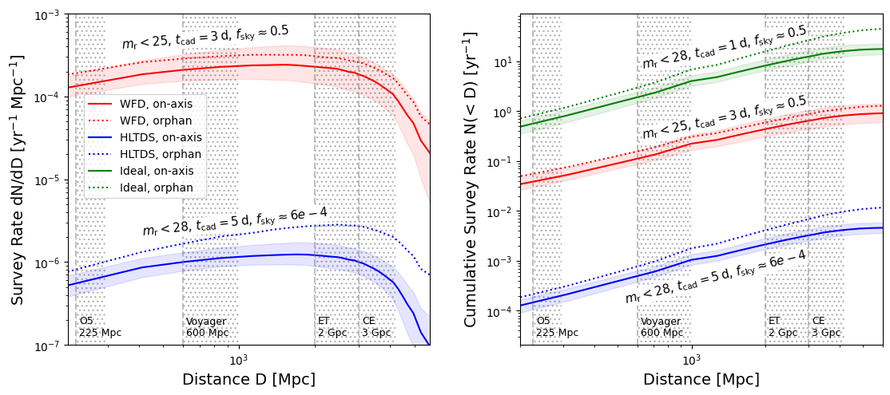
图注：\(\textit{Left}\): Predicted rate of on-axis (solid) and orphan (dotted) afterglow detection for WFD (red) and HLTDS (blue) as a function of distance. \(\textit{Right}\): Predicted cumulative rate of on-axis (solid) and orphan (dotted) afterglow detection for an ideal detector (green), WFD (red), and HLTDS (blue). We overlay the representative BNS sensitivity ranges for aLIGO O5, aLIGO Voyager \(\citep{Voyager2023, LIGO_Voyager},\) the ET \(\citep{et_volume},\) and the CE \(\citep{Hall2022CE}.\) $90\%$ confidence intervals for the on-axis rates are shown by the shaded regions.
对应解读：对应“LSST 与 Roman 发现率柱状图或后验分布”“探测距离或红移分布图”以及“图 5：O5 BNS 触发场景”的重点解读。
入选理由：这张图直接给出 WFD 与 HLTDS 策略下轴上余辉和孤儿余辉的距离分布及累积发现率，并叠加 aLIGO O5、Voyager、ET、CE 的 BNS 灵敏度范围，是判断“GW 范围内每年少于一个可发现余辉”这一核心结论的最关键图。
来源与置信度：\(arxiv_source\)；high；\(arxiv_source\) / sample631.tex:figure[10]
Fig07
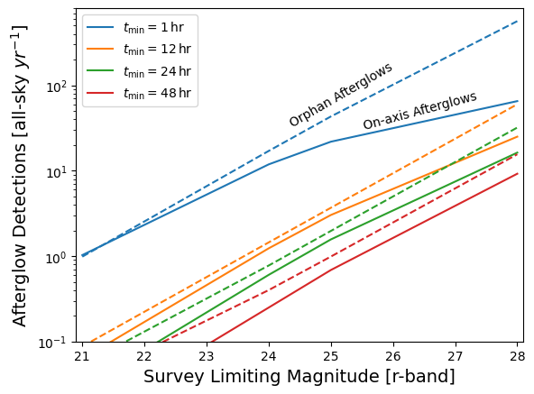
图注：The predicted all-sky per year afterglow detection rates as a function of $m_r^{\rm lim}$ for the considered follow-up observation times. Solid curves show the on-axis AGs, and dashed curves show the OAs - which include both the Off-axis and Faint orphan class.
对应解读：对应“LSST 与 Roman 发现率柱状图或后验分布”“孤儿余辉与轴上余辉比值图”以及模型拟合中按类别预测发现率的段落。
入选理由：该图以限制星等为横轴，分别展示轴上余辉和孤儿余辉的预测探测率，能直接检验巡天深度、观测时间和 OA/on-axis 比值如何影响 beaming 约束，是连接理论喷流模型与实际发现率的核心诊断图。
来源与置信度：\(arxiv_source\)；high；\(arxiv_source\) / sample631.tex:figure[7]
Fig03
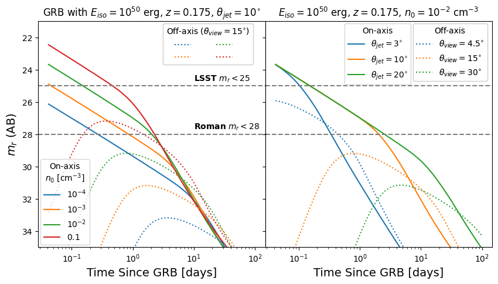
图注：Simulated sGRB $r$-band afterglow light curves in a top-hat jet model, assuming fixed values representative of a typical observed sGRB, for on-axis (solid) and off-axis (dotted) viewing angles. LSST and Roman $r$-band detection thresholds are overlaid (gray, dashed). \(\textit{ Left:}\) $E_{\rm iso}$, $z$, and $\theta_{\rm jet}$ are fixed to show light curve dependence on circumburst density. \(\textit{Right:}\) $E_{\rm iso}$, $z$, and $n_0$ are fixed to show light curve dependence on jet geometry.
对应解读：对应“模拟余辉光变曲线示例图”和“图 2：喷流结构或余辉光变曲线”的逐图导读。
入选理由：这张图展示典型 sGRB 的 r 波段轴上与离轴余辉光变曲线，并叠加 LSST 与 Roman 探测阈值，可直观看出离轴孤儿余辉更晚、更暗以及密度和喷流几何对可探测性的影响。
来源与置信度：\(arxiv_source\)；high；\(arxiv_source\) / sample631.tex:figure[3]
Fig04
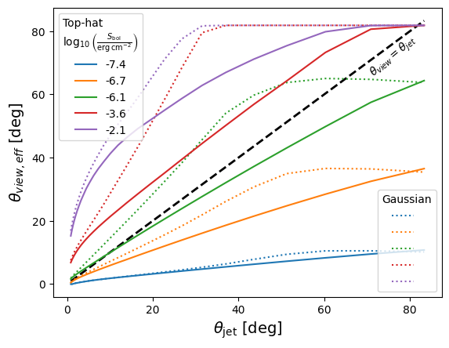
图注：The relationship between sGRB jet opening angle and afterglow effective detectable viewing angle $\theta_{\rm view, eff}$, where $f_{b, {\rm eff}} = 1 - \cos{(\theta_{\rm view, eff})}$ (i.e, the maximum viewing angle from which the afterglow remains detectable) at several $S_{\rm bol}$, for both a top-hat jet model (solid) and Gaussian jet model (dotted).
对应解读：对应“喷流模型或参数分布图”“孤儿余辉与轴上余辉比值图”以及关于 beaming fraction 退化的模型拟合讨论。
入选理由：该图把喷流开角与余辉有效可探测视角联系起来，并比较 top-hat 与 Gaussian 喷流模型，是理解孤儿余辉率如何约束喷流 beaming 的关键物理图，比单纯参数分布更直接服务于日报解读。
来源与置信度：\(arxiv_source\)；high；\(arxiv_source\) / sample631.tex:figure[4]
Fig06
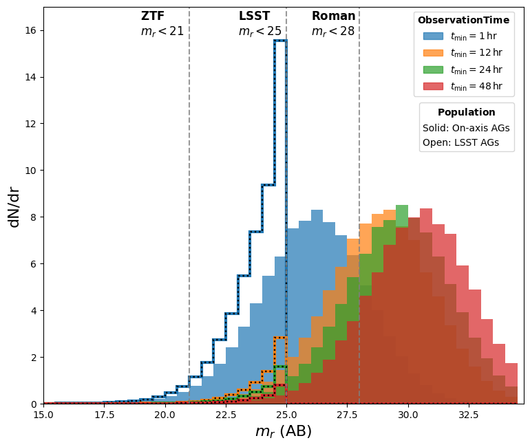
图注：The distribution of peak $r$-band apparent magnitudes at different observation times for the simulated sample of Swift/Fermi on-axis AGs (solid histograms), and the total LSST detectable ($m_{r} < 25$) afterglow population including both on-axis and orphan afterglows (open histograms). Optical detection limits in $r$-band are overlaid for ZTF, LSST, and Roman (gray, dashed).
对应解读：对应“探测距离或红移分布图”“图 4：峰值星等或峰值时间分布图”以及系统误差中巡天选择函数的讨论。
入选理由：该图给出模拟样本在不同观测时间的峰值 r 波段星等分布，并叠加 ZTF、LSST、Roman 限制星等，能判断事件是否只是达到单次阈值、Roman 是否能推进暗端，以及发现率对 cadence 和深度的敏感性。
来源与置信度：\(arxiv_source\)；high；\(arxiv_source\) / sample631.tex:figure[6]
Fig02
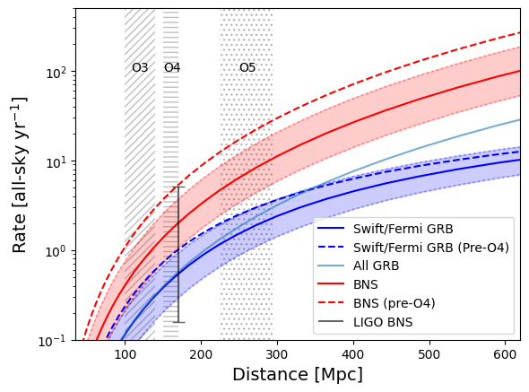
图注：Predicted cumulative all-sky per year rates post-O4 correction for Swift/Fermi sGRBs (blue), the full sGRB population (light blue), and BNS mergers (red) as a function of distance; dashed curves show corresponding pre-O4 analysis results. Gray shaded regions mark representative BNS ranges of aLIGO O3, O4, and O5 \(\citep{LVK}.\) The aLIGO BNS merger rate estimate \(\citep{Abbott_2025_GWTC4_Population}\) is scaled to an upper O4 BNS limit (black). Shaded bands denote $90\%$ confidence intervals for the post-O4 sGRB and BNS rates.
对应解读：对应“短暴-BNS 率张力”“O5 BNS 范围内发现率比较图或表”以及 O4 后更新率预测的解读。
入选理由：这张图展示 Swift/Fermi sGRB、全 sGRB 种群和 BNS 并合的累积距离率，并标出 O3/O4/O5 BNS range 与 90% 置信区间，是理解 O4 非探测后为何需要更新 sGRB-BNS 率模型的重要背景图。
来源与置信度：\(arxiv_source\)；high；\(arxiv_source\) / sample631.tex:figure[2]
强相关工作
同一事件和历史原型方面，GW170817/GRB 170817A 是本文所有讨论的实证锚点。相关论文包括 LIGO/Virgo 的 BNS 引力波发现、Fermi/INTEGRAL 的 GRB 170817A、光学千新星 AT2017gfo、以及后续射电/X 射线余辉和 VLBI 超光速运动对结构化喷流的约束。检索关键词可用“GW170817 structured jet afterglow orphan afterglow short GRB beaming”。
同类工作方面，短暴率与 BNS rate 的比较、孤儿余辉发现率预测、LSST 暂现源搜索和 Roman 近红外 follow-up 都已有文献。本文的定位是在 O4 无新增确认 BNS 的背景下更新 Rubin/Roman 时代的发现率，并把非探测对模型的约束说得更直接。检索关键词可用“short GRB rate binary neutron star merger rate LSST orphan afterglow Roman Space Telescope afterglow”。
可能的张力或相反观点集中在三点：第一，短暴母体是否完全由 BNS 构成，或是否包括 NS-BH、磁星巨耀发等污染；第二，GW170817 是否代表典型短暴喷流，还是一个低亮度近邻特殊事件；第三，光学孤儿余辉是否能在真实 alert stream 中可靠分类。读者在使用本文发现率时，应把这些问题作为模型先验和系统误差处理，而不是把预测数当成独立于分类现实的硬数字。
同一事件 / 同类源线索：
- https://arxiv.org/abs/2606.18468
- https://arxiv.org/abs/1710.05832
- https://arxiv.org/abs/1710.05834
- https://arxiv.org/abs/1806.09693
- https://www.ligo.caltech.edu/page/gw170817
相似工作：
基础理论 / 方法工作：
- https://arxiv.org/abs/astro-ph/9701231
- https://arxiv.org/abs/astro-ph/9702287
- https://arxiv.org/abs/astro-ph/9905105
相反观点 / 张力线索：
4. Improved proper motion and gravity tests with PSR J1913+1102
- 来源：arXiv / astro-ph.HE
- 链接：https://arxiv.org/abs/2606.19276v1
- 作者：Xueli Miao, Paulo C. C. Freire, Norbert Wex, Lingqi Meng, Thomas M. Tauris, Junjie Zhao, Weiwei Zhu, Robert Ferdman
- 评分：novelty 7/10，importance 8/10，relevance 8/10，final 8.70/10
- 推荐理由：双中子星脉冲星长期计时显著改进质量、 proper motion 和轨道衰减测量，对强场引力、双致密星形成和GW170817类前身星有实质约束，值得HE读者关注。
中文题目：用 PSR J1913+1102 的改进自行和双中子星计时检验引力
做了什么：这篇文章重新分析了非对称双中子星系统 PSR J1913+1102 的脉冲星计时数据，把 13 年 Arecibo 历史观测和新的 FAST 观测合并，并用两种方式处理色散量变化。作者得到更精确的自行、四个后开普勒参数和系统质量；在广义相对论假设下，总质量为 \(m_{\rm tot}=2.88948(20)\,M_\odot\)，脉冲星和伴星质量分别为 \(m_p=1.599(8)\,M_\odot\) 与 \(m_c=1.290(8)\,M_\odot\)。更好的自行使观测到的轨道周期导数能被更准确地修正，得到本征轨道衰减 \(\dot P_b^{\rm intr}=-4.60(6)\times10^{-13}\,{\rm s\,s^{-1}}\)，与广义相对论的引力波阻尼预言一致，并显著压缩了标量-张量引力中偶极辐射和自发标量化的允许空间。
为什么重要：PSR J1913+1102 的价值在于它既是相对论双星计时实验室，又是高度非对称双中子星并合前身的近邻样本。质量不对称使它对标量-张量引力中的偶极引力波辐射特别敏感；脉冲星质量接近 \(1.6\,M_\odot\) 的区间也正好落在许多自发标量化模型最容易出现偏离的窗口。换句话说，这不是又一次重复验证广义相对论，而是在一个理论上容易出问题的质量和轨道参数区域做更干净的检验。
理论 / 观测 / 仪器方法价值：对理论而言，本文把双中子星轨道衰减的误差预算推进到足以约束强场标量化窗口的水平。对观测而言，它展示了 Arecibo 长基线和 FAST 高灵敏度结合后，如何通过更精细的色散量建模和自行测量减少银河系运动学修正的不确定性。对双星演化而言，新的质量、自行和轨道参数反过来限制第二颗中子星形成前的氦星质量以及超新星 natal kick 的大小和方向。
为什么应该关注：如果你关心强场引力，PSR J1913+1102 是少数能把质量不对称、精确计时和轨道衰减同时用上的系统。如果你关心 GW170817 类并合的形成通道，它提供了一个未来将在约 (470\,{
m Myr}) 后并合的银河系内类比体。如果你做脉冲星计时或低频引力波相关分析，本文也很值得看，因为它清楚说明了色散量变化、自行和银河系加速度修正如何进入 \(\dot P_b\) 的误差链。
展开详细解读：文章讲解、背景、理论、重点章节、图表与相关工作
文章详细讲解
科学问题：PSR J1913+1102 是一个双中子星系统，轨道周期短、离心率可测，并且两颗中子星质量明显不等。这样的系统在广义相对论中主要通过四极引力波辐射损失轨道能量；但在许多标量-张量引力理论中，如果两颗中子星携带不同的有效标量荷，系统还会产生偶极辐射。偶极项通常比四极项低一个后牛顿阶，因此即使很小，也可能在轨道周期导数 \(\dot P_b\) 中留下可观测偏差。本文的核心问题是：在更长计时基线和更高精度观测加入后，PSR J1913+1102 的质量、轨道衰减和自行是否仍与广义相对论一致？这些结果能把强场标量引力压到什么程度？
作者怎么做：他们合并了 13 年 Arecibo 历史数据和新的 FAST 观测，重新建立计时解。一个关键技术点是色散量 \({\rm DM}\) 随时间变化会引入到达时残差，尤其当不同望远镜、不同频段和不同时期数据一起拟合时，若处理不好会把星际介质效应混入自旋、轨道或后开普勒参数。作者采用两类 \({\rm DM}\) 变化建模方案，其中主结果使用高斯过程处理 \({\rm DM}(t)\) 的随机时变成分。通过计时残差拟合，他们测得四个后开普勒参数，并在假定广义相对论成立时把这些参数转化为总质量、脉冲星质量和伴星质量。
关键结果：在高斯过程 \({\rm DM}\) 模型下，总质量达到 \(m_{\rm tot}=2.88948(20)\,M_\odot\)，相比此前改进约三倍；单星质量达到 \(m_p=1.599(8)\,M_\odot\)、\(m_c=1.290(8)\,M_\odot\)，质量比 \(q=0.807(8)\)。自行被改进为 \(\mu=7.71(25)\,{\rm mas\,yr^{-1}}\)，这对 \(\dot P_b\) 很关键，因为观测到的轨道周期导数包含 Shklovskii 效应和银河系加速度等运动学项。扣除这些项后，作者得到 \(\dot P_b^{\rm intr}=-4.60(6)\times10^{-13}\,{\rm s\,s^{-1}}\)，精度比旧值提高约五倍，并与广义相对论的引力波阻尼预言一致。
局限和下一步：本文的主要不确定性已经不只来自脉冲到达时本身，还来自距离、自行、银河系势模型、星际介质色散变化以及不同观测系统间的时延标定。虽然 \(\dot P_b^{\rm intr}\) 与广义相对论符合，但标量-张量理论的约束仍依赖中子星状态方程和标量耦合参数化；不同状态方程会改变有效标量荷随质量的行为。下一步最直接的是继续 FAST 长期监测，改善年周视差或独立距离约束，降低运动学修正误差；同时把本文结果与其他双中子星、脉冲星-白矮星系统和引力波并合事件联合，分离强场标量化、质量函数和双星演化选择效应。
关键结果是怎么做出来的
本文最重要的证据链从样本和数据基线开始。作者不是只加入少量新到达时，而是把 13 年 Arecibo 观测与 FAST 新数据合并，使计时基线足以同时约束自旋、天体测量、开普勒轨道和后开普勒参数。对一个轨道衰减检验而言，长基线非常关键，因为 \(\dot P_b\) 的信号表现为轨道相位中随时间累积的二次项；基线越长，真实轨道衰减与短期色散噪声、仪器跳变和红噪声越容易区分。
样本量在这里不是星系巡天意义上的大量源，而是同一脉冲星的多历元到达时集合。作者的关键选择是如何处理 \({\rm DM}\) 变化：一种方案可理解为显式分段或参数化修正，另一种用高斯过程描述连续随机变化。主结果采用高斯过程 \({\rm DM}(t)\)，因为它能把星际介质导致的频率相关时延作为相关噪声建模，而不是硬塞进确定性轨道参数。读者应重点检查论文中计时残差随时间和频率的图，以及不同 \({\rm DM}\) 方案下后开普勒参数是否一致。
质量测量来自后开普勒参数的组合。双星计时中常见的后开普勒量包括近星点进动 \(\dot\omega\)、爱因斯坦延迟参数 \(\gamma\)、Shapiro 延迟参数和轨道周期导数 \(\dot P_b\)。在广义相对论内，不同后开普勒参数都应落在同一组 \((m_p,m_c)\) 上。本文报告四个后开普勒参数，质量误差显著下降，说明这些曲线在质量-质量平面上的交会区域被压缩。若论文有质量-质量图，最该看的是各后开普勒约束带是否在 \(1\sigma\) 或 \(2\sigma\) 内相交，以及 \(\dot P_b\) 约束在扣除运动学项前后如何移动。
显著性和一致性不是简单地看 \(\dot P_b^{\rm obs}\) 与广义相对论数值是否接近，而是要先计算 \(\dot P_b^{\rm intr}=\dot P_b^{\rm obs}-\dot P_b^{\rm kin}-\dot P_b^{\rm Gal}\)。本文改进的自行 \(\mu=7.71(25)\,{\rm mas\,yr^{-1}}\) 直接降低 Shklovskii 修正的不确定性；再结合距离和银河系加速度模型，得到 \(\dot P_b^{\rm intr}=-4.60(6)\times10^{-13}\,{\rm s\,s^{-1}}\)。这个误差约为 \(6\times10^{-15}\,{\rm s\,s^{-1}}\)，使偏离广义相对论的剩余空间很小。论文中支撑该结论的表格应列出 \(\dot P_b^{\rm obs}\)、各项运动学修正、广义相对论预言和最终残差。
系统误差方面，读者应关注三类稳健性检验。第一，不同 \({\rm DM}\) 建模对 \(\dot P_b\)、\(\dot\omega\)、\(\gamma\) 和自行的影响是否小于统计误差或被纳入误差预算。第二，FAST 与 Arecibo 的数据权重、仪器跳变和模板选择是否会系统性推高某一类参数精度。第三，距离和银河系势模型对 \(\dot P_b^{\rm intr}\) 的贡献是否仍是误差主导项。若这些检验通过，本文对偶极辐射和自发标量化的约束才可被视为强场引力约束，而不是计时系统学的产物。
展开背景、理论、公式、模型、章节和图表导读
背景知识
双中子星系统是强场相对论的经典实验室。与太阳系实验相比，中子星的紧致度 \(GM/(Rc^2)\) 高得多，内部引力结合能可占静质量的相当比例，因此许多在弱场中几乎不可见的引力修正会在中子星中被放大。PSR B1913+16 的轨道衰减曾首次间接证明引力波能量损失，而后续双脉冲星和其他相对论双星则把广义相对论检验推到更高精度。
PSR J1913+1102 的特别之处是质量高度不对称。许多已知双中子星的质量比较接近，而这个系统的脉冲星质量约为 \(1.6\,M_\odot\)，伴星约为 \(1.29\,M_\odot\)。如果某种替代引力理论使中子星获得与质量、紧致度或内部结构相关的标量荷，那么两颗质量不同的中子星会具有不同标量荷，进而产生偶极引力辐射。质量越不对称，偶极辐射的潜在信号通常越强。
这个系统也常被拿来与 GW170817 的前身类比。GW170817 显示双中子星并合可以产生千新星和短伽马暴，并对核物质状态方程、重元素合成和引力波传播速度给出约束。PSR J1913+1102 仍在银河系内、尚未并合，因而能用电磁计时逐年追踪轨道演化；它提供的是并合前长期动力学的精确剖面，而不是并合瞬间的引力波波形。
为什么现在值得重新看？一是 Arecibo 的长期历史数据给出了时间基线，二是 FAST 的高灵敏度显著提高新到达时精度，三是脉冲星计时中对 \({\rm DM}\) 变化和红噪声的建模工具更成熟。对 \(\dot P_b\) 这类微小长期效应，新增几年高质量数据常常不是线性提高，而是通过打破参数相关性带来成倍改进。
该领域常见误区包括：把观测到的 \(\dot P_b^{\rm obs}\) 直接当作引力波阻尼；忽略自行导致的 Shklovskii 效应；把广义相对论假设下得到的质量当作完全理论无关的质量；以及认为没有发现偏离就没有新信息。事实上，高精度零结果会排除替代引力理论的参数空间，尤其是那些特意设计成在弱场太阳系实验中隐蔽、但在中子星强场中显现的模型。
基础理论 / 方法脉络
从物理图像看，双中子星是两个致密质量在相互引力下绕质心运动。开普勒参数描述轨道的主要几何量，如轨道周期 \(P_b\)、偏心率 \(e\)、近星点角 \(\omega\) 和投影半长轴 \(x=a_p\sin i/c\)。在牛顿理论中，这些参数基本恒定；在相对论中，近星点会进动，脉冲到达时间会受到引力红移、时间膨胀和 Shapiro 延迟影响，轨道还会因引力波辐射而逐渐收缩。
脉冲星计时的可观测量是每个脉冲到达望远镜的时间。计时模型把到达时转换到太阳系质心，并扣除自转、位置、自行、双星轨道、星际色散和仪器延迟等效应。模型参数通过最小化到达时残差来估计。对于相对论双星，后开普勒参数是最关键的物理量：它们不是独立的任意修正，而是在给定引力理论中由两颗星质量和轨道参数决定。
本文使用的一个重要观测假设是 \({\rm DM}\) 变化可以被统计建模。星际等离子体使低频脉冲比高频脉冲晚到，延迟与观测频率的平方倒数成正比。若 \({\rm DM}\) 随时间变化未被正确处理，频率相关残差可能伪装成长期计时噪声，进而污染自行、视差或轨道周期导数。高斯过程方法相当于给 \({\rm DM}(t)\) 一个相关随机场先验，用数据决定它的平滑性和振幅。
引力检验的核心是比较 \(\dot P_b^{\rm intr}\) 与理论预言。观测到的 \(\dot P_b^{\rm obs}\) 包含真实轨道衰减，也包含系统横向运动造成的表观加速度和银河系引力势造成的相对加速度。自行越精确，Shklovskii 项越准；距离越准，银河系加速度和 Shklovskii 项越准。本文的改进自行因此不仅是天体测量结果，也是强场引力检验的误差预算核心。
退化关系主要有三类。第一，后开普勒参数之间在质量平面上有交叉约束，但如果某一参数系统误差大，会拖动质量估计。第二，\({\rm DM}\) 噪声、红噪声和仪器跳变可能与慢变天体测量参数相关。第三，替代引力约束依赖中子星状态方程，因为标量荷与质量和半径的关系不是完全理论无关。读这篇文章时应始终区分“计时测得的现象学参数”、“在广义相对论下推导的质量”和“在特定替代引力模型下导出的耦合约束”。
公式与推导
第一步是双星的牛顿质量函数。脉冲星投影半长轴 \(x=a_p\sin i/c\)、轨道周期 \(P_b\) 与两星质量满足
这里 \(m_p\) 是可见脉冲星质量，\(m_c\) 是伴星质量，\(i\) 是轨道倾角，\(G\) 是引力常数，\(c\) 是光速。这个式子给出最基本的质量-倾角退化。
第二步是广义相对论中的近星点进动。对偏心双星，后开普勒参数 \(\dot\omega\) 给出总质量
其中 \(m_{\rm tot}=m_p+m_c\)，\(e\) 是偏心率，\(T_\odot=GM_\odot/c^3\)。在广义相对论假设下，\(\dot\omega\) 通常是总质量最强约束之一。
第三步是爱因斯坦延迟参数，它结合了二阶 Doppler 效应和引力红移：
这里 \(\gamma\) 的量纲是时间。它对质量比敏感，因此与 \(\dot\omega\) 结合可把 \((m_p,m_c)\) 的允许区域压缩。
第四步是 Shapiro 延迟。若轨道倾角较高，脉冲经过伴星引力势附近时会产生额外传播延迟，常写成
\(r\) 是范围参数，\(s\) 是形状参数，\(\phi\) 是轨道相位。即使 Shapiro 信号不如高倾角系统强，它仍可提供质量和倾角约束。
第五步是广义相对论的四极引力波轨道衰减。Peters-Mathews 公式给出
这个量是本文引力检验的基准预言：若测得的本征 \(\dot P_b\) 与它一致，就没有看到额外能量损失。
第六步是把观测值修正为本征值：
其中 \(\dot P_b^{\rm Shk}\) 是横向运动项，\(\dot P_b^{\rm Gal}\) 是银河系加速度项，\(\dot P_b^{\rm other}\) 可包括质量损失等通常很小的项。本文改进自行主要就是降低 \(\dot P_b^{\rm Shk}\) 的误差。
第七步是 Shklovskii 项的标度：
其中 \(\mu\) 是总自行，\(d\) 是距离。它是表观效应，不代表轨道真实能量损失；但若不扣除，会直接偏置 \(\dot P_b^{\rm intr}\)。
第八步是星际色散延迟：
其中 \(K_{\rm DM}\) 是色散常数，\(\nu\) 是观测频率，\({\rm DM}=\int n_e\,dl\) 是电子柱密度。本文用高斯过程等方法处理 \({\rm DM}(t)\)，实质是在计时模型中分离频率相关传播效应和频率无关的轨道效应。
第九步是计时参数估计的似然。若到达时残差向量为 \(\mathbf r\)，协方差矩阵为 \(\mathbf C\)，则高斯似然可写成
\(\mathbf C\) 可包含白噪声、红噪声和 \({\rm DM}\) 高斯过程协方差。这个式子说明为什么噪声模型会影响参数误差和显著性。
第十步是替代引力的偶极辐射诊断。很多标量-张量模型中，额外轨道衰减近似随两星有效标量荷差的平方增长：
其中 \(\alpha_p\) 和 \(\alpha_c\) 是两颗星的有效标量耦合，\(F(e)\) 是偏心率函数。PSR J1913+1102 的质量不对称使 \(\alpha_p-\alpha_c\) 潜在较大，因此 \(\dot P_b^{\rm intr}-\dot P_b^{\rm GR}\) 的小残差能转化为强约束。
模型拟合 / 应用方法
本文的拟合对象是脉冲到达时数据，而不是直接拟合质量。计时模型先给出自转频率及其导数、天球位置、自行、双星开普勒参数、后开普勒参数、仪器跳变和传播效应参数。到达时残差经过白噪声重标定、可能的红噪声处理和 \({\rm DM}\) 变化建模后，用似然或等价的加权残差统计量估计参数。质量是在广义相对论框架下由后开普勒参数再推导出来的。
\({\rm DM}\) 建模是本工作的拟合重点之一。若用过于刚性的 \({\rm DM}\) 分段模型，可能无法捕捉平滑但非线性的星际介质变化；若高斯过程过于灵活，又可能吸收一部分真实低频计时信号。合理做法是比较不同 \({\rm DM}\) 模型下的参数后验、残差功率谱和信息准则，确认 \(\dot P_b\)、\(\mu\) 和后开普勒参数不被噪声模型任意拖动。本文报告两种方案，主结果采用高斯过程，说明作者把传播系统误差视为核心误差源而非附属修正。
参数退化方面，\(\dot P_b^{\rm obs}\)、自行 \(\mu\)、距离 \(d\) 和银河系加速度模型共同决定 \(\dot P_b^{\rm intr}\)。在质量估计中，\(\dot\omega\) 强约束总质量，\(\gamma\) 和 Shapiro 参数帮助确定质量比与倾角；若只有一个后开普勒参数，质量解会高度退化。本文由于测得四个后开普勒参数，因此可以做过约束检验：多条后开普勒曲线是否交于同一区域，是广义相对论一致性的直观诊断。
残差应从三个层面看。第一，时间域残差是否存在长周期结构，尤其是在 Arecibo 与 FAST 交接处是否有系统跳变。第二，频率域残差是否还保留 (
\(u^{-2}\)) 形态，若有说明 \({\rm DM}\) 未充分建模。第三，轨道相位折叠残差是否显示近星点或合相附近的系统偏差，若有可能影响 \(\gamma\) 或 Shapiro 延迟。对专业读者来说，这些残差诊断比单个参数误差条更能判断结论是否稳健。
模型可能失败的场景包括：距离估计偏差导致 Shklovskii 修正错误；银河系势模型在该视线方向和距离上误差被低估；仪器时延跳变与长期相位漂移相关；或高斯过程超参数选择影响低频信号。替代引力约束还可能受状态方程选择影响，因为同一质量对应的紧致度和标量荷并不唯一。因此本文结果最适合被理解为“在当前计时、距离和状态方程假设下，对广义相对论偏离的强限制”，而不是完全模型无关的最终判决。
重点章节 / 结果段落怎么读
数据与观测部分应先读。重点看 Arecibo 和 FAST 数据的时间覆盖、频率覆盖、到达时数量、模板生成、仪器跳变处理以及不同数据集的权重。这里决定了长基线和高信噪比如何共同贡献参数精度，也决定了系统误差是否可能跨仪器传播。
计时模型和 \({\rm DM}\) 处理部分是全文方法核心。读者应比较两种 \({\rm DM}\) 变化模型的假设、超参数或分段方式，以及它们对残差和参数后验的影响。特别要看作者为何把高斯过程 \({\rm DM}\) 模型作为主结果，是否给出与替代模型的一致性检验。
后开普勒参数与质量部分应结合质量-质量图阅读。\(\dot\omega\)、\(\gamma\)、Shapiro 参数和 \(\dot P_b\) 在广义相对论下分别对应不同质量约束带；如果这些约束带相交，说明系统自洽。这里也是总质量和单星质量误差改进的主要来源。
轨道周期导数修正和引力检验部分最值得细读。不要只看最终 \(\dot P_b^{\rm intr}\)，还要看 \(\dot P_b^{\rm obs}\)、Shklovskii 项、银河系加速度项和距离误差分别贡献多少。本文的自行改进为何能把 \(\dot P_b^{\rm intr}\) 精度提高到旧值五倍，是这一节的关键。
双星形成与 natal kick 讨论部分连接高能天体物理。改进的质量、空间运动和轨道参数可反推第二颗中子星形成前的氦星质量、超新星质量损失和踢速方向。读者应注意这些结论通常依赖人口合成或轨道回溯假设，稳健性不等同于计时参数本身。
建议重点查看的图表
-
到达时残差随时间图：看 Arecibo 与 FAST 数据是否在同一计时模型下无明显阶跃，残差是否有长期红噪声结构，FAST 新数据是否显著收紧后期趋势。
-
\({\rm DM}(t)\) 或色散残差图：看两种 \({\rm DM}\) 建模方案是否给出相近的长期趋势，是否存在未建模的频率相关残差，误差带是否在数据稀疏时期变宽。
-
质量-质量约束图：看 \(\dot\omega\)、\(\gamma\)、Shapiro 参数和 \(\dot P_b\) 的约束带是否交于同一区域，交会区大小相对旧结果缩小多少。
-
\(\dot P_b\) 误差预算表或图：看观测值、Shklovskii 修正、银河系加速度修正、本征值和广义相对论预言分别是多少，哪一项主导误差。
-
自行或天体测量后验图：看 \(\mu_\alpha\)、\(\mu_\delta\) 或总自行 \(\mu\) 的置信区间，是否与旧测量一致，是否与距离先验相关。
-
标量-张量引力约束图：看排除区如何随耦合参数和状态方程变化，特别是 \(1.6\,M_\odot\) 附近自发标量化窗口是否被压缩。
-
双星形成或 natal kick 参数图：看允许的超新星前氦星质量、踢速大小和方向是否出现多解，哪些区域由新自行和质量测量排除。
关键图表逐图导读
图 1：若论文给出观测时间线或计时残差图，横轴通常是观测年份，纵轴是到达时残差，数据点按望远镜或频段区分。读图时不要只看均方根残差，要看 Arecibo 历史段与 FAST 新段之间是否存在系统偏移，以及残差是否在多年尺度上有同号漂移。若模型线为零残差基准，随机散布且无频率分层才说明计时模型和仪器跳变处理较可信。
图 2：\({\rm DM}\) 变化图通常横轴为时间，纵轴为 \({\rm DM}\) 偏移或由 \({\rm DM}\) 引起的等效时延。数据点可能来自多频观测估计，曲线可能是高斯过程均值，阴影为置信区间。关键是看 \({\rm DM}\) 模型是否只吸收频率相关变化，而没有在数据稀疏区过度外推。读图陷阱是把平滑曲线当作真实星际介质结构；它首先是统计模型下的条件均值。
图 3：质量-质量图应以 \(m_p\) 和 \(m_c\) 为坐标轴，不同颜色或线型代表不同后开普勒参数的允许带。\(\dot\omega\) 常给出总质量方向的窄带，\(\gamma\) 给出斜向约束，Shapiro 参数给出与倾角相关的区域。最重要的是多条带的共同交叠区及其置信水平。如果某条带明显偏离其他带，那将暗示系统误差或引力理论偏离；本文结论则是它们在误差内一致。
图 4：\(\dot P_b\) 修正或残差图可能以条形误差预算、表格或理论-观测比较形式出现。横轴可能列出 \(\dot P_b^{\rm obs}\)、\(\dot P_b^{\rm Shk}\)、\(\dot P_b^{\rm Gal}\)、\(\dot P_b^{\rm intr}\) 和 \(\dot P_b^{\rm GR}\)，纵轴为 \(\dot P_b\)。读者应看误差条是否主要来自自行、距离还是银河系势模型，以及 \(\dot P_b^{\rm intr}-\dot P_b^{\rm GR}\) 是否显著偏离零。
图 5：标量-张量约束图通常以耦合参数空间为坐标，例如弱场耦合和非线性耦合参数，阴影区表示已排除区域。本文的贡献应表现为在自发标量化窗口附近新增或加强排除，尤其对 \(m_p\simeq1.6\,M_\odot\) 的质量区间敏感。读图陷阱是忽视状态方程依赖；同一条排除曲线在不同状态方程下可能移动。
图 6：若有双星形成约束图，坐标可能是超新星前氦星质量与 natal kick 速度，或踢速方向角与系统速度。数据点或阴影区表示满足当前质量、偏心率、轨道周期和空间运动的解。读者应区分由计时直接测量排除的区域和由演化模型先验排除的区域；后者物理意义重要，但模型依赖更强。
论文原图 / 可嵌入图片
Fig06
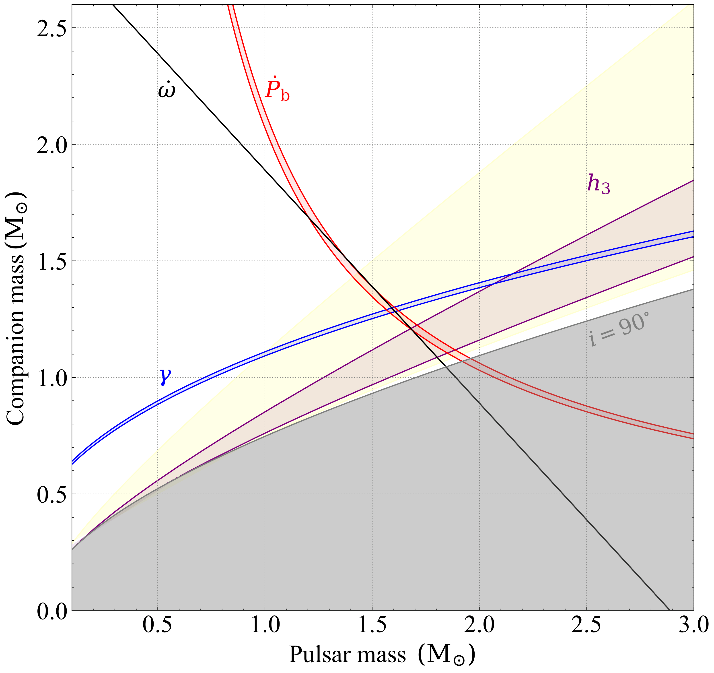
图注：Mass-mass diagram for PSR J1913+1102. The measurements of the four PK parameters, $\dot{\omega}$, $\gamma$, $h_{3}$ and $\dot{P}_{\rm b}$, are displayed in different colors. The shaded regions represent the 1-$\sigma$ uncertainties of PK parameters, except for the yellow region, which indicates the 2-$\sigma$ uncertainty of $h_{3}$. $\dot{P}_{\rm b}$ has been corrected for the Shklovskii effect and the differential Galactic acceleration between the SSB and pulsar system. The gray area is excluded by the requirement that $\sin{i}\leq1$.
对应解读：建议重点查看的图表第3项；关键图表逐图导读图3；模型拟合中“四个后开普勒参数的过约束检验”。
入选理由：这是论文最核心的广义相对论一致性诊断图，直接展示 \(m_p\)-\(m_c\) 平面上 \(\dot\omega\)、\(\gamma\)、Shapiro 参数 \(h_3\) 和已修正 \(\dot P_b\) 的约束带是否交于同一区域。它比单纯质量后验图更能支撑日报关于质量改进、四个 PK 参数过约束检验以及轨道衰减与 GR 一致的解读。
来源与置信度：\(arxiv_source\)；high；\(arxiv_source\) / \(clean_version.tex\):figure[6]
Fig05
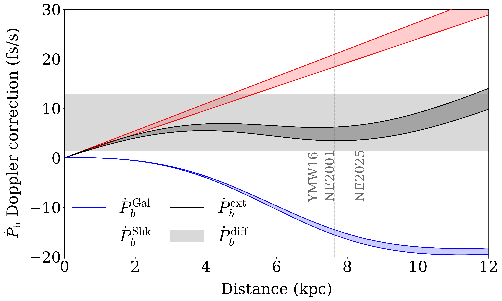
图注：$\dot{P}_{\rm b}$ contributions from differential Galactic acceleration (\(\texttt{MWPotential2014}\) model) and the Shklovskii effect as a function of the distance to the pulsar. The red curves denote the $\pm 1$-$\sigma$ limits of $\dot{P}_{\rm b}^{\rm Shk}$; the blue curves represent the same for $\dot{P}_{\rm b}^{\rm Gal}$; and the black curves indicate their sum, the total non-intrinsic contribution, $\dot{P}_{\rm b}^{\rm ext}$. The shaded regions between them indicate the 1-$\sigma$ uncertainties. The three vertical gray dashed lines mark the distances inferred from the YMW16, NE2001, and NE2025 models. The light gray band represents $\dot{P}_{\rm b}^{\rm diff}\equiv\dot{P}_{\rm b}^{\rm obs}-\dot{P}_{\rm b}^{\rm GR}$.
对应解读：建议重点查看的图表第4项；关键图表逐图导读图4；模型拟合中 \(\dot P_b^{\rm obs}\)、Shklovskii 修正、银河系加速度和本征 \(\dot P_b\) 的误差预算段落。
入选理由：该图直接给出 Shklovskii 效应、银河系差分加速度及其总外源贡献随距离的变化，并与 \(\dot P_b^{\rm obs}-\dot P_b^{\rm GR}\) 比较，是理解 \(\dot P_b^{\rm intr}\) 如何从观测值修正得到、误差由哪些运动学项控制的关键图。
来源与置信度：\(arxiv_source\)；high；\(arxiv_source\) / \(clean_version.tex\):figure[5]
Fig08
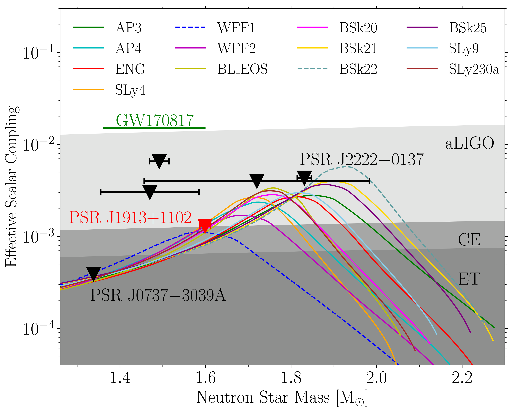
图注：Updated constraints on the effective scalar coupling parameter $\alpha_{\rm A}$ in the spontaneous scalarisation window ($\beta_{0}\in\left[-4.8,\,4.0\right]$), as a function of NS's mass, derived from a set of binary pulsar systems and for different NS's EoSs. The inverted triangles represent the $90\%$ CL upper limits on the effective scalar coupling parameter $\alpha_{\rm A}$ from a selection of binary pulsars. The updated constraints from PSR J1913+1102, which incorporate the new timing results of this pulsar, are indicated by the red triangle. The coloured lines represent the 90\% limits obtained from the analysis of the ensemble of pulsars obtained assuming the EoSs listed at the top. The figure also highlights PSRs J2222$-$0137 and J0737$-$3039A, which together with PSR J1913+1102 currently play the most important role in constraining the DEF spontaneous-scalarisation window. We also show the constraint on $\alpha_{\rm A}$ from GW170817. The shaded gray regions indicate parameter space below the sensitivity of advanced LIGO (aLIGO) and the projected sensitivities of Cosmic Explorer (CE) and Einstein Telescope (ET), obtained via Fisher-matrix estimates for a $1.25\,{\rm M_{\odot}}$ companion NS merger at 200 Mpc ($90\%$ CL upper limits).
对应解读：建议重点查看的图表第6项；关键图表逐图导读图5；详细解读中标量-张量引力和自发标量化窗口约束。
入选理由：该图直接展示 PSR J1913+1102 更新计时结果对有效标量耦合 \(\alpha_A\) 的限制，并与其他双星脉冲星、不同中子星状态方程以及 GW170817 约束比较，最能支撑日报关于 \(1.6\,M_\odot\) 附近自发标量化窗口被压缩的结论。
来源与置信度：\(arxiv_source\)；high；\(arxiv_source\) / \(clean_version.tex\):figure[8]
Fig03
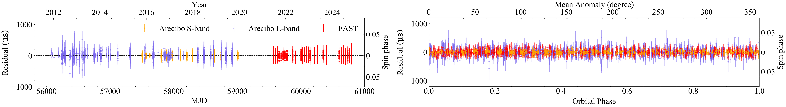
图注：Residuals (ToAs minus DDFWHE model predictions) from timing analysis of PSR J1913+1102 are shown with 1-$\sigma$ uncertainties. The residuals in orange and medium slate blue represent the Arecibo S-band and L-band data, respectively, and the red points are obtained from FAST. The top figure shows the residuals as a function of time. The bottom figure shows the residuals as a function of the orbital phase. The ToA residuals are consistent with their uncertainties, and no unmodeled trends are evident, indicating that the DDFWHE timing solution adequately describes the system within the measurement precision.
对应解读：建议重点查看的图表第1项；关键图表逐图导读图1；模型拟合中时间域和轨道相位残差诊断。
入选理由：该图显示 Arecibo S/L 波段与 FAST 数据在同一 DDFWHE 计时模型下的到达时残差，并同时给出随时间和轨道相位的分布。它能直接检查是否存在望远镜间阶跃、长期未建模趋势或轨道相位相关系统偏差，是判断计时解稳健性的基础图。
来源与置信度：\(arxiv_source\)；high；\(arxiv_source\) / \(clean_version.tex\):figure[3]
Fig02
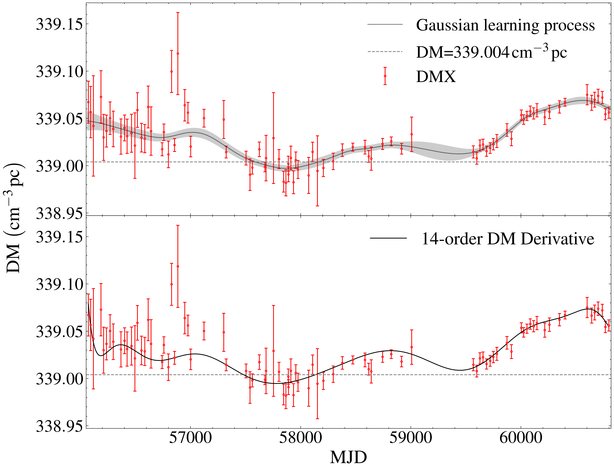
图注：DM variations and fit results for PSR J1913+1102. In both panels, the red dots represent the DMX (20-day interval) values obtained from the DDFWHE model. The top panel shows the Gaussian-process fit (gray solid line) with the shaded region indicating the 1-$\sigma$ uncertainty of the fitted offsets, while the bottom panel displays a 14-order DM-derivative fit (black solid line).
对应解读：建议重点查看的图表第2项；关键图表逐图导读图2；模型拟合中 \({\rm DM}(t)\) 高斯过程与 DM 导数模型比较。
入选理由：该图明确比较了高斯过程 DM 模型和 14 阶 DM 导数模型，并给出 GP 的 1\(\sigma\) 不确定性带，可用于判断 DM 变化是否被合理吸收、数据稀疏区误差是否变宽，以及传播效应是否可能影响 \(\dot P_b\)、自行和后开普勒参数。
来源与置信度：\(arxiv_source\)；high；\(arxiv_source\) / \(clean_version.tex\):figure[2]
Fig10
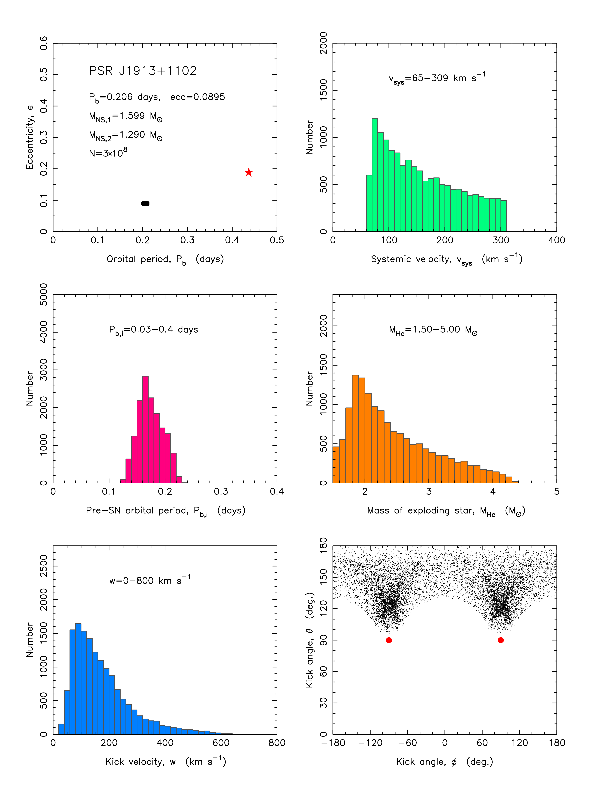
图注：Formation constraints of PSR J1913+1102 based on $3\times 10^8$ simulations of the second SN. Here, $v_{\rm sys}$ is the 3D systemic velocity with respect to the LCF, $P_{\rm b,\,i}$ is the pre-SN orbital period, ${\rm M}_{\rm He,\,f}$ is the final helium-star mass of the exploding progenitor, $w$ is the kick magnitude imparted to the newborn NS, and $\theta$ and $\phi$ are two angles defining the direction of the kick velocity. In the upper-left panel, the red star shows the initial location of this system if it formed 2730 Myr ago. In the lower-right panel, the red circles indicate kick directions parallel ($\theta=90^{\circ},\,\phi=90^{\circ}$) and anti-parallel ($\theta=90^{\circ},\,\phi=-90^{\circ}$) to the pre-SN orbital angular momentum vector.
对应解读：建议重点查看的图表第7项；关键图表逐图导读图6；详细解读中双星形成、超新星前氦星质量和 natal kick 约束。
入选理由：该图基于大量第二次超新星模拟，展示系统速度、超新星前轨道周期、最终氦星质量、踢速大小和方向等允许区域，直接支撑日报关于新质量和自行测量如何收紧双中子星形成与 natal kick 参数空间的讨论。
来源与置信度：\(arxiv_source\)；high；\(arxiv_source\) / \(clean_version.tex\):figure[10]
强相关工作
同一源方面，应检索 PSR J1913+1102 的发现和早期计时论文，关键词可用 “PSR J1913+1102 asymmetric double neutron star timing”, “Ferdman PSR J1913+1102 Nature 2020”, “J1913+1102 proper motion orbital decay”。这些早期工作建立了它作为高度非对称双中子星和 GW170817 类前身的地位；本文的新增点是更长基线、更好的 FAST 数据和更严格的 \({\rm DM}\) 建模，使质量和 \(\dot P_b^{\rm intr}\) 误差显著下降。
同类源方面，应把本文与 PSR B1913+16、双脉冲星 PSR J0737−3039A/B，以及若干脉冲星-白矮星系统的引力检验并读。PSR B1913+16 是轨道衰减经典样本，双脉冲星提供多后开普勒参数的高精度广义相对论检验；脉冲星-白矮星系统由于两星引力结合能差异更大，常给出强偶极辐射约束。PSR J1913+1102 的独特位置在于它是双中子星且质量不对称，因而补充了白矮星伴星系统和近等质量双中子星系统的参数空间。
理论背景方面，应检索 “scalar tensor gravity spontaneous scalarization neutron stars”, “dipolar gravitational radiation binary pulsars”, “Damour Esposito-Farese scalarization”。相反观点或张力主要不表现为某篇论文声称 PSR J1913+1102 偏离广义相对论，而是不同状态方程、不同标量耦合形式和不同系统误差处理会给出不同强度的排除区。因此读者应关注本文是否把状态方程依赖和距离/运动学误差清楚分开。
同一事件 / 同类源线索：
相似工作：
- https://ui.adsabs.harvard.edu/abs/1975ApJ...195L..51H/abstract
- https://ui.adsabs.harvard.edu/abs/2006Natur.583..211F/abstract
- https://ui.adsabs.harvard.edu/abs/2006PhRvX..10a1043K/abstract
基础理论 / 方法工作：
- https://ui.adsabs.harvard.edu/abs/1964PhRv..136.1224P/abstract
- https://ui.adsabs.harvard.edu/abs/1992PhRvD..45.1840D/abstract
- https://ui.adsabs.harvard.edu/abs/1993PhRvL..70.2220D/abstract
- https://ui.adsabs.harvard.edu/abs/2006Sci...314...97K/abstract
相反观点 / 张力线索：
5. Late-time JWST/NIRCam Observations of the Extremely Long-duration GRB 250702B/EP 250702a and Its Host Galaxy
- 来源：arXiv / astro-ph.HE
- 链接：https://arxiv.org/abs/2606.18353v1
- 作者：Huei Sears, Jean J. Somalwar, Ryan Chornock, Tanmoy Laskar, Andrew Levan, Raffaella Margutti, Brendan O'Connor, Nayana A. J.
- 评分：novelty 7/10，importance 7/10，relevance 9/10，final 8.70/10
- 推荐理由：极长时标GRB 250702B/EP 250702a的JWST晚期观测和宿主星系分析，涉及GRB与可能jetted TDE/SN后余辉判别；虽结果有歧义，但GRB相关性高。
中文题目：极长持续时间伽马暴 GRB 250702B/EP 250702a 的晚期 JWST/NIRCam 观测及其宿主星系
做了什么：这篇论文报告了 GRB 250702B/EP 250702a 爆发后约 95 天观测者系的 JWST/NIRCam 近红外成像。作者重点做了两件事：一是用多波段宿主星系测光和 Prospector 星族合成拟合，确认宿主是一个近乎侧向、带明显尘埃带的高质量星系，恒星质量约为 \(\log(M_*/M_\odot)=11.0^{+0.2}_{-0.3}\)，视向消光约为 \(A_V=2.8\pm0.3\,\mathrm{mag}\)；二是在暂现源位置做强制测光，发现 \(\mathrm{F150W}\) 与 \(\mathrm{F200W}\) 中可能有约 \(3\sigma\) 的晚期微弱源，但 \(\mathrm{F277W}\)、\(\mathrm{F356W}\)、\(\mathrm{F444W}\) 没有显著暂现辐射。若蓝端两波段探测为真，光变曲线可能在晚期变平，既可与喷流潮汐瓦解事件类行为相容，也可由超新星加 GRB 余辉解释；若只是噪声或宿主残差，则现有数据只给出上限，不能超越简单幂律衰减外推。
为什么重要：GRB 250702B/EP 250702a 的异常之处在于持续时间极长，且宿主星系明显不同于典型长暴宿主：它很亮、很有质量、尘埃很重。如果这是坍缩星型长暴，它会落在 GRB 宿主族群的高质量极端端点；如果它更像喷流潮汐瓦解事件，晚期近红外平台和宿主环境则可能给出关键判据。这篇文章的重要性不在于已经定案，而在于把“极长暴到底是什么”这个分类问题推进到可由 JWST 晚期成像检验的阶段。
理论 / 观测 / 仪器方法价值：对观测而言，论文展示了 JWST/NIRCam 在强宿主背景、尘埃带和弱暂现源条件下做晚期强制测光的能力和困难。对理论而言，它把坍缩星 GRB、喷流 TDE、超新星伴随余辉三类解释放到同一组晚期近红外约束下比较。对方法而言，文章强调没有干净晚期模板时，\(\sim3\sigma\) 残余点源不能被过度解释；这对今后处理高红移或强宿主背景暂现源很有参考价值。
为什么应该关注：如果你关心长暴前身星、极长暴分类、尘埃遮蔽宿主中的暂现源，或 JWST 对高能暂现源的后随观测，这篇都值得看。它提醒我们：一个看似只是“晚期两点弱探测”的结果，实际牵涉到宿主星系族群、余辉外推、超新星贡献、喷流 TDE 平台、以及模板扣除系统误差等多个层面的判断。
展开详细解读：文章讲解、背景、理论、重点章节、图表与相关工作
文章详细讲解
科学问题：GRB 250702B/EP 250702a 被描述为极长持续时间伽马射线暴，这类事件一直处在长暴、低亮度长暴、超长暴、喷流潮汐瓦解事件之间的灰区。标准长暴通常与大质量恒星坍缩有关，常出现在低金属丰度、较低质量、强恒星形成的宿主中；而喷流 TDE 倾向于发生在星系核附近，并可呈现长时标高能活动和晚期变平光变。本文要回答的问题不是单纯“有没有看到一个晚期点源”，而是这个晚期源和宿主环境是否能帮助判断 GRB 250702B 的物理来源。
作者怎么做：论文使用 JWST/NIRCam 在爆发后约 95 天观测者系的多波段成像，覆盖 \(\mathrm{F150W}\)、\(\mathrm{F200W}\)、\(\mathrm{F277W}\)、\(\mathrm{F356W}\)、\(\mathrm{F444W}\) 等近红外波段。作者先分析宿主星系形态，指出图像中只有一个显著宿主，且呈近乎侧向的盘状结构，带有明显尘埃带。随后用宿主星系测光输入 Prospector 进行星族合成建模，估计恒星质量、尘埃消光等物理量。对暂现源本身，作者在已知定位处进行强制测光，而不是只依赖盲源提取；这在源很弱、位于复杂宿主背景上时很关键。
关键结果：宿主星系质量很高，约为 \(\log(M_*/M_\odot)=11.0^{+0.2}_{-0.3}\)，消光 \(A_V=2.8\pm0.3\,\mathrm{mag}\)，与此前研究相符。如果 GRB 250702B 是坍缩星驱动的长暴，那么它的宿主在相近红移 GRB 宿主中会是静止系 \(r\) 带和 \(H\) 带最亮、恒星质量最高的一类。暂现源位置靠近尘埃带；在 \(\mathrm{F277W}\)、\(\mathrm{F356W}\)、\(\mathrm{F444W}\) 中没有看到显著暂现辐射，但 \(\mathrm{F150W}\) 和 \(\mathrm{F200W}\) 强制测光给出约 \(3\sigma\) 的可能探测，对应 \(m_{\mathrm{F150W}}\sim27.9\,\mathrm{AB}\) 与 \(m_{\mathrm{F200W}}\sim27.4\,\mathrm{AB}\)。若这些点可靠，晚期光变可能相对早期幂律衰减发生变平。
局限和下一步：论文最重要的谨慎点是，约 \(3\sigma\) 的晚期探测处在宿主背景扣除、点扩散函数匹配、局部尘埃结构、星系梯度残差都可能影响的 regime。没有更晚期、暂现源完全消失后的 JWST 模板，无法把暂现源通量与宿主结构残差彻底分开。因此作者给出的解释是分叉的：若蓝端探测为真，可以讨论喷流 TDE 式平台或超新星加余辉；若不可靠，则只得到与早期余辉幂律外推相容的上限。下一步最直接的是获取晚期模板成像，做图像相减，并结合射电、X 射线、光学/红外光谱和星系核偏移测量来区分前身星模型。
关键结果是怎么做出来的
本文证据链的起点是样本选择非常简单：只有一个事件 GRB 250702B/EP 250702a，观测时间是爆发后约 95 天观测者系，目标是在暂现源已经显著变暗后利用 JWST/NIRCam 检查宿主和可能的晚期残余光。这样的单源论文不追求统计族群显著性，而是追求对一个异常事件的深度环境和晚期光变约束。读者应注意，事件数为 \(1\)，所以“极端宿主”这类结论依赖于与已有 GRB 宿主样本的比较，而不是来自本文内部的大样本统计。
宿主星系部分的关键数据是多波段近红外测光和形态。作者看到一个近乎 edge-on 的单一星系，有显著尘埃带，暂现源定位靠近尘埃带。Prospector 拟合给出高恒星质量和高消光：\(\log(M_*/M_\odot)=11.0^{+0.2}_{-0.3}\)、\(A_V=2.8\pm0.3\,\mathrm{mag}\)。这里的置信区间来自星族合成模型的后验分布，系统误差主要来自星族形成史、尘埃律、金属丰度和旧恒星群年龄之间的退化。结论“若为坍缩星 GRB，则宿主极端明亮且高质量”应结合宿主比较图或表来看，而不是只看单个质量数值。
暂现源部分的核心统计量是强制测光信噪比。作者在已知暂现源位置测量通量，而不是要求图像中出现独立高显著性源。结果是 \(\mathrm{F150W}\) 与 \(\mathrm{F200W}\) 有约 \(3\sigma\) 候选信号，AB 星等约 \(m_{\mathrm{F150W}}\sim27.9\) 和 \(m_{\mathrm{F200W}}\sim27.4\)；在 \(\mathrm{F277W}\)、\(\mathrm{F356W}\)、\(\mathrm{F444W}\) 未见显著信号。约 \(3\sigma\) 对单个预先指定位置可以值得讨论，但远未达到稳健发现级别，尤其是在复杂宿主背景上。
模型比较的逻辑是把这些晚期点或上限放到已有光变曲线外推上。如果蓝端两点是真实暂现辐射，它们相对于早期余辉幂律可能偏亮，暗示晚期变平；这可类比喷流 TDE 的缓慢衰减或平台，也可由 GRB 余辉加超新星光峰尾部解释。若把这些点作为上限，则它们并不显著排除早期幂律衰减模型。因此本文没有用贝叶斯因子或信息准则强行宣布某一模型胜出，而是强调两种解释路径取决于候选探测的真实性。
支撑结论的图表应包括 NIRCam 彩色图或单波段图、暂现源位置局部放大图、宿主 SED 拟合图、宿主与 GRB 宿主族群的质量/亮度比较图、以及光变曲线外推图。稳健性检验的重点不是“把误差条画小”，而是看局部背景估计、PSF 模型、宿主形态残差、不同孔径或强制测光设置是否改变 \(\mathrm{F150W}\) 和 \(\mathrm{F200W}\) 的候选信号。论文最后强调需要晚期模板，正是因为当前最主要系统误差来自无法直接减去宿主本身。
展开背景、理论、公式、模型、章节和图表导读
背景知识
研究对象是一个极长持续时间的高能暂现源 GRB 250702B/EP 250702a。长持续时间 GRB 通常被解释为大质量恒星核心坍缩后形成相对论喷流，喷流穿出恒星包层后产生 prompt \(\gamma\)-ray 发射，随后与外部介质相互作用形成余辉。但持续时间特别长的事件会挑战这个简单图像，因为发动机活动时标、包层尺度、吸积过程和观测选择效应都可能改变观测到的持续时间。
历史上，超长 GRB 或极长 GRB 的解释并不唯一。部分事件可由蓝超巨星或低金属丰度大质量恒星坍缩解释，部分事件则被拿来与喷流潮汐瓦解事件比较。喷流 TDE 中，恒星被超大质量黑洞撕裂，回落物质驱动长时标吸积和喷流，可能在 X 射线和红外波段维持较长时间的发射。因此，同样是“长时标高能活动”，坍缩星和 TDE 在宿主环境、源相对于星系核的位置、晚期光变形态和多波段谱能量分布上应有可区分之处。
GRB 宿主星系研究提供了另一条线索。典型长暴宿主常偏低质量、低金属丰度、高比星形成率，这与大质量恒星形成和喷流穿出条件有关。但这种说法有选择效应：尘埃遮蔽会让一些暗暴或红外更亮的宿主在光学样本中被低估；高质量、高尘埃星系中的 GRB 可能需要红外和射电后随观测才能完整识别。JWST 的近红外灵敏度和空间分辨率使得这类尘埃丰富宿主中的晚期暂现源研究变得现实。
为什么现在值得重新看，是因为 JWST/NIRCam 能在爆发后数月仍给出深的近红外约束，并解析宿主内部结构。对于 GRB 250702B，宿主的尘埃带和高质量使它不像许多教科书式长暴宿主；同时晚期可能的蓝端近红外弱源又使 TDE 平台、超新星尾部和余辉衰减之间的区分变得可检验。
该领域常见误区有三个。第一，把持续时间极长直接等同于 TDE，这是过度简化；坍缩星模型中发动机时标和观测波段选择也能拉长表观时标。第二，把宿主质量高直接当作排除长暴的证据；实际上长暴宿主分布有尾部，尘埃选择效应会影响样本。第三，把 \(3\sigma\) 强制测光点当作确认探测；在有复杂宿主背景时，系统误差可能与统计误差同量级，必须等待模板相减。
基础理论 / 方法脉络
从物理图像看，GRB 余辉通常来自相对论喷流与外部介质相互作用。激波加速电子，电子在放大磁场中产生同步辐射。若观测频率处在某一固定谱段内，通量常可近似写成时间幂律和频率幂律的乘积，即 \(F_\nu\propto t^{-\alpha}\nu^{-\beta}\)。因此，早期多波段光变可以外推到晚期，检验是否存在额外成分，如超新星、尘埃回声、宿主污染或 TDE 式平台。
本文涉及的关键观测量是 NIRCam 各滤光片中的 AB 星等、通量密度和信噪比。AB 星等与通量密度有固定转换，因而一个 \(m\sim28\) 的点源对应纳 Jy 量级的微弱通量。由于暂现源位于明亮宿主和尘埃带附近，主要挑战不是仪器灵敏度本身，而是如何把局部星系背景、尘埃结构和 PSF 翼从候选点源中分离出来。
宿主星系的物理参数通过星族合成拟合得到。Prospector 一类代码把恒星形成史、金属丰度、尘埃衰减、恒星质量和红移等参数映射到模型 SED，再与观测测光比较。这里的 \(M_*\) 和 \(A_V\) 不是直接观测量，而是模型后验量；它们会受到质量光度比、尘埃律、年龄-尘埃退化和近红外旧恒星贡献的影响。
在前身星判别上，位置也很重要。坍缩星 GRB 应跟随恒星形成区，可能位于盘内或尘埃带附近；TDE 更倾向于星系核附近，尽管定位误差、星系投影和尘埃遮挡会使判断复杂。本文提到暂现源定位靠近尘埃带，但仅凭这一点不能排除 TDE，也不能确认坍缩星模型；需要结合相对于星系光心或核的偏移、宿主星形成性质和晚期光变。
常见退化包括：余辉幂律衰减加上宿主残差可以伪装成平台；超新星红外光在晚期可抬高 \(\mathrm{F150W}\) 和 \(\mathrm{F200W}\) 通量；尘埃消光会改变颜色，使本征蓝色源看起来更红；而不同滤光片的 PSF 和背景结构差异会造成波段间显著性不一致。本文的核心谨慎性正来自这些退化尚未被晚期模板打破。
公式与推导
第一步，把观测星等转换为通量密度。AB 系定义为
其中 \(F_\nu\) 是单位频率通量密度。反解得到
因此 \(m_{\rm AB}\sim28\) 对应极低的纳 Jy 量级通量，这解释了为什么宿主背景扣除会成为主要限制。
第二步，若要从观测通量得到静止系光度，需要做距离和红移修正。对频率通量密度有
其中 \(D_L\) 是光度距离，\(z\) 是红移，且 \(\nu_{\rm rest}=(1+z)\nu_{\rm obs}\)。这个关系用于把 NIRCam 测得的宿主或暂现源通量放到静止系光度比较中。
第三步，简单余辉外通常采用幂律形式：
其中 \(\alpha\) 是时间衰减指数，\(\beta\) 是谱指数。若 \(\mathrm{F150W}\) 与 \(\mathrm{F200W}\) 点显著高于该外推，说明可能存在额外发光成分或衰减变平。
第四步，若考虑一个额外晚期成分，可写成
其中 \(F_{\nu,\rm AG}\) 是余辉，\(F_{\nu,\rm extra}\) 可代表超新星或 TDE 平台，\(F_{\nu,\rm host}\) 是宿主背景。没有模板时，\(F_{\nu,\rm host}\) 的局部估计误差会直接投影到 \(F_{\nu,\rm extra}\)。
第五步，尘埃消光把本征通量变成观测通量：
其中 \(A_\lambda=k(\lambda)E(B-V)\)，且 \(A_V=R_VE(B-V)\)。本文宿主拟合得到较大 \(A_V\)，意味着颜色和星族参数必须与尘埃律一起解释。
第六步，强制测光的最简单显著性可写成
其中 \(\hat F\) 是在已知位置估计的点源通量，\(\sigma_F\) 包括背景噪声、读出噪声、泊松噪声以及理想情况下的模型误差。约 \(3\sigma\) 表示 \(\hat F\approx3\sigma_F\)，在复杂背景上应视为候选而非定论。
第七步，更完整的图像域模型可表示为
其中 \(I_i\) 是第 \(i\) 个像素值，\(P_i\) 是归一化 PSF，\(F_{\rm pt}\) 是点源通量，\(G_i\) 是宿主模型，\(B_i\) 是天空背景，\(\epsilon_i\) 是噪声。宿主尘埃带会使 \(G_i\) 难以用光滑模型描述。
第八步，对像素拟合可用高斯似然近似：
其中 \(M_i\) 是包含点源、宿主和背景的模型。比较 \(F_{\rm pt}=0\) 与 \(F_{\rm pt}>0\) 的模型，可得到候选点源的统计偏好。
第九步，星族合成拟合本质上是在后验中估计宿主参数：
其中 \(\mathbf{d}\) 是宿主多波段测光，\(\boldsymbol{\theta}\) 包括 \(M_*\)、\(A_V\)、金属丰度和恒星形成史等。本文报告的宿主质量和消光不只是最佳拟合点，而应理解为该后验的边缘化结果。
模型拟合 / 应用方法
本文的宿主拟合使用 Prospector 这类星族合成框架，拟合量是宿主在多个 NIRCam 或已有多波段数据中的测光。模型参数通常包括恒星质量 \(M_*\)、恒星形成史、年龄、金属丰度、尘埃消光 \(A_V\)、尘埃衰减曲线以及可能的星云发射贡献。输出的 \(\log(M_*/M_\odot)=11.0^{+0.2}_{-0.3}\) 和 \(A_V=2.8\pm0.3\,\mathrm{mag}\) 是在模型假设下的后验约束，而不是几何质量或直接尘埃柱密度测量。
参数退化需要特别关注。老年恒星群和尘埃红化都能让 SED 变红，金属丰度也会改变近红外质量光度比；因此 \(M_*\)、年龄、金属丰度和 \(A_V\) 存在协方差。若缺少足够的紫外到中红外覆盖，星形成率和尘埃遮蔽的年轻恒星成分尤其难分。对本文来说，尽管高质量结论看起来稳健，但“在同红移 GRB 宿主中最极端”的说法仍应与比较样本选择、波段换算和红移分布一起检查。
暂现源测光拟合更接近图像域问题。强制测光固定源位置，估计点源通量和误差；在理想情况下，残差图应没有 PSF 形状的系统结构。如果 \(\mathrm{F150W}\) 与 \(\mathrm{F200W}\) 的候选信号是真点源，局部残差应与 NIRCam PSF 一致，并且在不同测光孔径、不同背景环、不同图像组合方式下稳定。若信号来自尘埃带结构或宿主梯度，残差通常会随背景模型改变而变化。
光变模型比较主要在三个情景之间进行：单一余辉幂律继续衰减、余辉加超新星、以及类似喷流 TDE 的晚期变平。拟合时关键参数包括余辉归一化、时间衰减指数 \(\alpha\)、谱指数 \(\beta\)、额外成分峰值时间和颜色。由于晚期有效点数很少，尤其只有两个候选探测和三个上限，模型自由度很容易过高；因此本文没有强行用复杂模型取得形式上更好的拟合，而是把结论表述为条件性的。
模型可能失败的地方包括：早期光变本身可能不是单一幂律；不同波段可能跨越同步谱断裂，导致简单 \(F_\nu\propto t^{-\alpha}\nu^{-\beta}\) 外推不适用；宿主局部消光可能与全局 \(A_V\) 不同；超新星模板若来自普通长暴样本，未必适用于如此极长事件；TDE 类比也可能只是在光变形态上相似，而非同一物理机制。实际应用上，这篇论文给出的最好策略是把当前 JWST 点作为“待模板验证的晚期约束”，而不是最终分类证据。
重点章节 / 结果段落怎么读
数据与观测部分应首先阅读。这里会说明 JWST/NIRCam 的观测时间、滤光片、曝光和图像处理流程。读者应关注观测发生在爆发后约 95 天观测者系，这决定了它主要约束晚期余辉、超新星尾部或 TDE 平台，而不是 prompt 后早期余辉。
宿主星系形态与测光部分是第二个重点。应检查作者如何定义宿主、是否只有一个候选宿主、暂现源位置相对尘埃带和星系主体在哪里，以及多波段测光如何提取。近乎侧向的尘埃盘是本文解释系统误差和宿主特殊性的关键。
Prospector 建模部分应关注输入测光、模型假设和后验结果。读者不要只摘录 \(M_*\) 与 \(A_V\)，还应看不确定度、拟合残差、是否考虑不同恒星形成史或尘埃律。该部分决定“高质量、高尘埃宿主”的可信度。
暂现源强制测光和光变曲线部分是全文最敏感的结果。应看 \(\mathrm{F150W}\) 与 \(\mathrm{F200W}\) 候选信号如何得到，局部背景如何估计，\(\mathrm{F277W}\)、\(\mathrm{F356W}\)、\(\mathrm{F444W}\) 上限如何计算，以及这些点相对于早期余辉外推的位置。
讨论部分要按条件句阅读。作者不是说已经证明 GRB 250702B 是 TDE，也不是说已经探测到超新星；他们说如果候选探测真实，则晚期变平可与喷流 TDE 或超新星加余辉相容；如果只是上限，则不进一步限制余辉幂律。附录或稳健性检验若存在，应优先查测光设置、误差估计和模板需求。
建议重点查看的图表
-
JWST/NIRCam 宿主图像或彩色合成图：看宿主是否确为单一星系、是否近乎侧向、尘埃带位置和暂现源定位是否重合或接近。
-
暂现源局部放大图和残差图：重点看 \(\mathrm{F150W}\) 与 \(\mathrm{F200W}\) 中候选点源是否呈 PSF 状，其他滤光片是否只剩宿主结构残差。
-
宿主 SED 拟合图：检查观测测光点、Prospector 最佳模型、后验范围和残差；尤其看高 \(A_V\) 是否由多个波段共同要求，而非单个异常点驱动。
-
宿主质量/亮度与 GRB 宿主样本比较图：看 GRB 250702B 宿主在 \(M_*\)、静止系 \(r\) 带和 \(H\) 带亮度上的位置，注意比较样本红移和选择函数。
-
晚期光变曲线图：看早期幂律外推、JWST 候选点、上限以及超新星或 TDE 类模型曲线之间的相对位置。
-
强制测光诊断表：检查各滤光片通量、误差、信噪比、孔径修正和上限定义；约 \(3\sigma\) 点是否在不同处理下稳定最关键。
关键图表逐图导读
图 1：通常应是 NIRCam 图像或多色合成图。横纵轴为空间坐标或相对天球坐标，图上应标出暂现源定位和宿主中心。读者要看宿主是否呈单一、近 edge-on 盘状形态，以及尘埃带是否穿过或接近暂现源位置。读图陷阱是把尘埃带中的亮暗结构误认为独立源；应结合各滤光片和定位误差圈判断。
图 2：可能是暂现源位置的分波段 cutout 或残差图。每个面板对应一个 NIRCam 滤光片，数据点不是曲线而是像素强度分布。关键是 \(\mathrm{F150W}\) 与 \(\mathrm{F200W}\) 中是否有与 PSF 一致的局部峰值，而 \(\mathrm{F277W}\)、\(\mathrm{F356W}\)、\(\mathrm{F444W}\) 是否没有类似峰值。陷阱是不同波段 PSF、背景和宿主颜色不同，不能简单把“蓝端有、红端无”直接解释为物理颜色。
图 3：宿主 SED 拟合图应以观测波长为横轴、通量或星等为纵轴，显示测光点、模型谱和后验区间。主要结论是宿主需要高恒星质量和强尘埃衰减才能解释多波段能量分布。读图时要看残差是否系统偏离某些波段；若近红外点被模型很好拟合但短波段缺失，\(A_V\) 的解释会更可信。
图 4：宿主与 GRB 宿主族群比较图可能以红移、恒星质量或绝对星等为坐标。GRB 250702B 宿主应位于高质量、高亮度端。主要结论是若它属于坍缩星长暴宿主，将是同类样本中非常极端的案例。读图陷阱是比较样本可能来自光学选择、暗暴样本或不同测光体系，不能把排名理解为无选择效应的宇宙真实分布。
图 5：晚期光变图应以时间为横轴、通量或 AB 星等为纵轴，并叠加早期余辉外推、JWST 候选探测和上限。若 \(\mathrm{F150W}\) 与 \(\mathrm{F200W}\) 点高于幂律外推，视觉上会呈现变平；若把它们视为上限，则模型约束显著减弱。读图时要注意星等轴常反向，亮度向上或向下取决于作图习惯。
图 6：若有测光或模型比较表，应把它当作关键图表读。列中通常包括滤光片、星等、通量、误差、信噪比和上限。重点是候选 \(3\sigma\) 探测的误差是否只含统计项，还是已包含宿主背景系统项；这直接决定能否把它们用于物理分类。
论文原图 / 可嵌入图片
Fig03
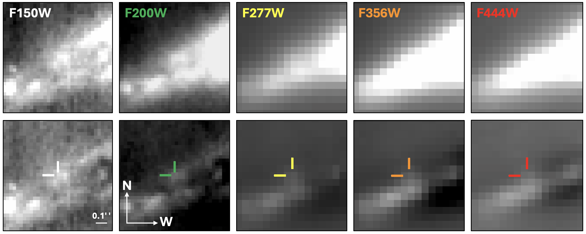
图注：1\arcsec\ crops of the field around the transient location. The top row shows the Level 3 data products, and the bottom row shows the \(\texttt{GALFIT}\) residual after galaxy and sky subtraction. The cross hairs show the location of the transient. The scale and colorbar have been adjusted to see fine details.
对应解读：对应“暂现源局部放大图和残差图”以及关键图表逐图导读中的图 2；也直接支撑模型拟合段落里关于强制测光、GALFIT 残差和 PSF 状候选信号的讨论。
入选理由：这是判断 F150W 与 F200W 中约 3σ 候选点源是否真实的核心图。它同时给出暂现源位置附近的多波段 cutout 和 GALFIT 扣除宿主后的残差，最能检验候选信号是否为 PSF 状、红端滤光片是否只剩宿主结构残差，因此比一般宿主大图更直接支撑论文最关键的不确定性。
来源与置信度：\(arxiv_source\)；high；\(arxiv_source\) / main.tex:figure[3]
Fig05
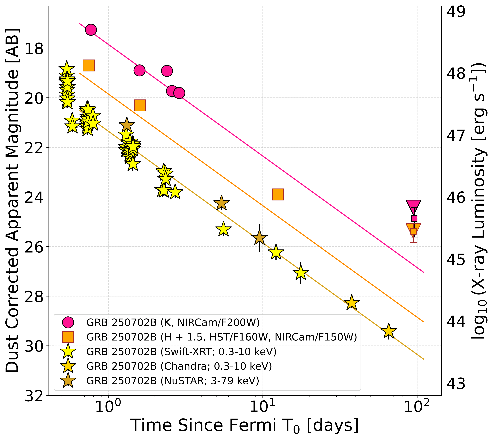
图注：The IR and X-ray light curves of GRB 250702B. Circles (magenta) and squares (orange) show IR detections, while the similarly-colored downward pointing triangles (smaller squares) show JWST upper-limits (forced aperture photometry). Stars (shades of yellow) show X-ray detections from the listed observatories. The solid line extrapolations all have a slope of $t^{-1.8}$ (the best-fit X-ray slope from \citealt{OConnor2025}) and are arbitrarily offset to match the three GRB 250702B data sets. Uncertainty bars are sometimes smaller than the symbols. See Table \(\ref{tbl:transientphot}\) for all IR measurements of GRB 250702B used in this plot. X-ray observations of GRB 250702B are compiled from the Swift-XRT archive and Table 1 in \(\cite{OConnor2025}.\)
对应解读：对应“晚期光变曲线图”和关键图表逐图导读中的图 5；支撑单一余辉幂律外推、JWST 候选点和上限之间相对位置的讨论。
入选理由：该图汇总 IR 与 X 射线光变，并叠加 \(t^{-1.8}\) 外推线，直接展示 JWST 晚期点或上限相对于早期余辉衰减的偏离程度。它是理解“若 F150W/F200W 为真探测则光变变平，若为上限则约束较弱”的主要证据图。
来源与置信度：\(arxiv_source\)；high；\(arxiv_source\) / main.tex:figure[5]
Fig06
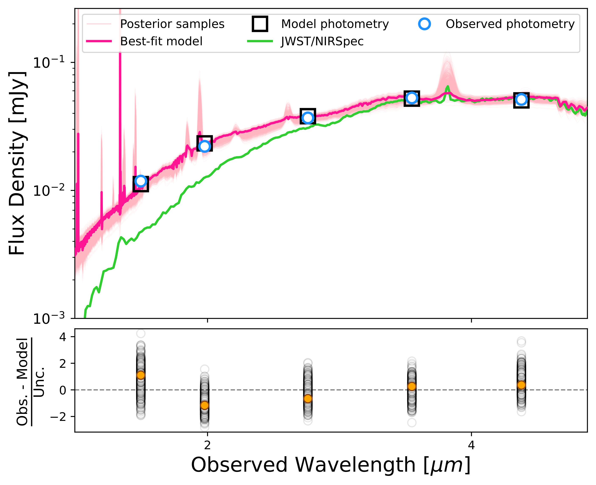
图注：\(\textbf{Top:}\) \(\texttt{Prospector}\) fit to the JWST host photometry, assuming a parametric star-formation history. The observations are shown in light blue, while the model photometry is shown as black squares. The full model spectral energy distribution is shown as a pink line. A sample of draws from the posterior are shown as light pink lines. We additionally plot in lime green the JWST/NIRSpec spectrum taken at the transient location, normalized to the F444W measurement \(\citep\)[originally presented in][]{Gompertz2025}. The NIRSpec slit placement did not include the nucleus of the host galaxy, leading to the redder color of the spectrum than the host photometry. \(\textbf{Bottom:}\) The agreement between the best-fit model is shown in orange. The grey points show the agreement relative to a sample of draws from the posterior.
对应解读：对应“宿主 SED 拟合图”和模型拟合段落中 Prospector 对宿主测光的拟合、后验范围与残差检查。
入选理由：该图明确显示 JWST 宿主测光点、Prospector 模型光度、模型 SED、后验抽样以及底部残差，是检验高恒星质量和高 \(A_V\) 是否由多波段 SED 共同要求的关键图。相比 corner plot，它更适合日报读者直接判断模型是否系统偏离某些波段。
来源与置信度：\(arxiv_source\)；high；\(arxiv_source\) / main.tex:figure[6]
Fig09
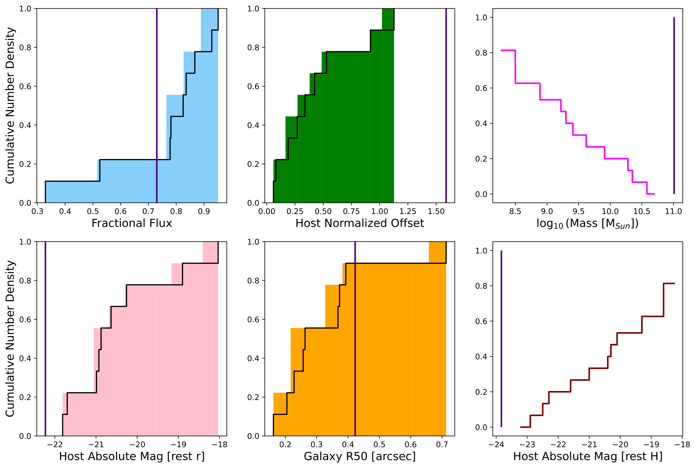
图注：Cumulative histograms (shaded regions) and eCDFs (solid lines) for a subsample of GRB host galaxies at $0.8 < z < 1.3$. In clockwise order starting at the top left are the fractional flux, host normalized offset, stellar mass, host absolute magnitude in observed-frame $3.6\ \mu m$ ($\approx$ rest-frame $H$), half-light radius in arcseconds, and the host absolute magnitude in the filter closest to rest-frame $r$. For both absolute magnitudes, only a $K$-correction of $-2.5\log(1+z)$ has been applied. The value of each parameter for the host galaxy of GRB 250702B is marked with an indigo vertical line. Further details on these comparisons are described in Section \(\ref{subsec:HostComparison}\)
对应解读：对应“宿主质量/亮度与 GRB 宿主样本比较图”和关键图表逐图导读中的图 4。
入选理由：该图用累积分布和 eCDF 比较 0.8<z<1.3 的 GRB 宿主样本，并用垂线标出 GRB 250702B 宿主在恒星质量、近似静止系 H 带和 r 带绝对星等、偏移等量上的位置，直接支撑“若为坍缩星长暴则宿主极端高质量高亮度”的结论。
来源与置信度：\(arxiv_source\)；high；\(arxiv_source\) / main.tex:figure[9]
Fig01
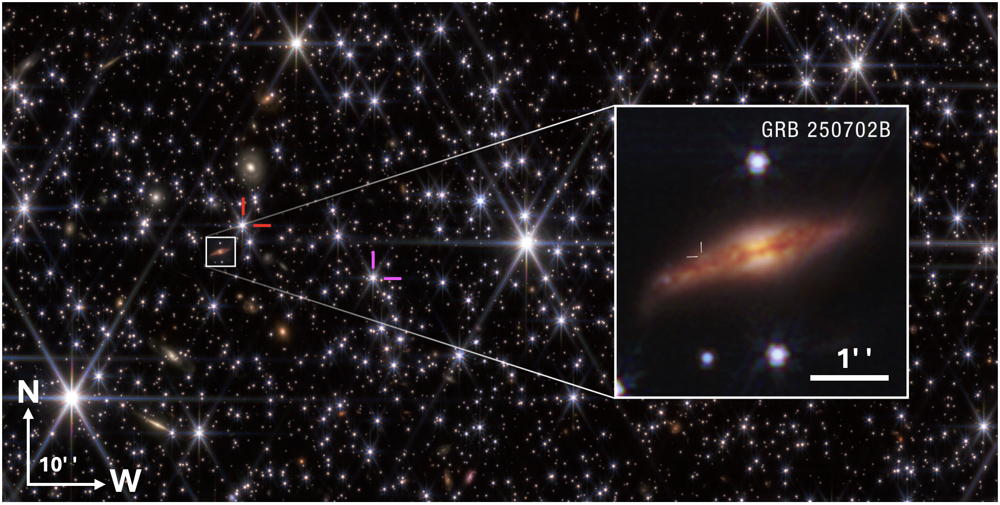
图注：A multi-color JWST/NIRCam composite image of the field and host galaxy of GRB 250702B. The zoomed inset shows the host galaxy of GRB 250702B, which shows a large, dusty, spiral galaxy. The transient is marked with white cross hairs in the zoomed inset, and it is offset by $\sim 0.67''$ ($\sim 5.5$ kpc at $z = 1.036$) from the nucleus of the host galaxy. The contaminating star and the subtraction star are marked with red and magenta cross hairs, respectively. The diffraction spikes near the host galaxy have been removed to better see host galaxy features, but the original field in F150W is shown in Figure \(\ref{fig:diffspike_sub}.\) The imaging used in this figure is described in Section \(\ref{subsec:JWSTimaging}.\) This figure has been modified from its originally presented version. Credit: NASA, ESA, CSA, H. Sears (Rutgers). Image Processing: A. Pagan (STScI).
对应解读：对应“JWST/NIRCam 宿主图像或彩色合成图”和关键图表逐图导读中的图 1。
入选理由：该多色 JWST/NIRCam 合成图展示宿主为单一、尘埃丰富、近侧向的大型旋涡星系，并标出暂现源相对宿主核的偏移位置。它最直观地支撑宿主形态、尘埃带和暂现源定位关系的解读。
来源与置信度：\(arxiv_source\)；high；\(arxiv_source\) / main.tex:figure[1]
Fig08
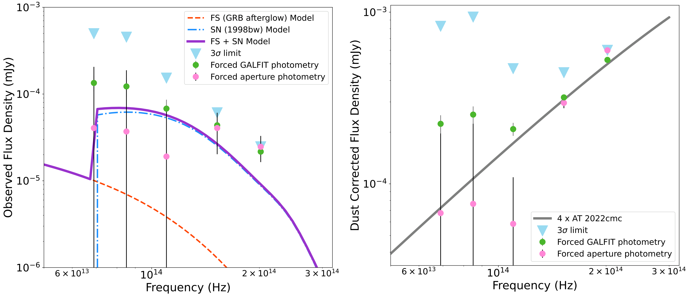
图注：\(\textbf{Left: }\) Observed transient upper limits (blue triangles) and forced photometry (pink and green triangles) compared to a forward shock model \(\citep\)[FS, dashed red,][]{Levan2025_BDE, Gompertz2025}, SN (1998bw, dot-dashed blue) model, and the sum of the two models (solid purple). The SN model used here does not extend beyond observer-frame $K$, which is the origin of the artificial sharp red cut off. The F150W$-$F200W color of the summed model matches the observed data well, however, the model is fainter than observed in GRB 250702B. \(\textbf{Right:}\) Extinction corrected photometry (same colors and symbols as in the left panel) compared to the 95 d (grey) SED model of the jetted TDE AT 2022cmc, from `Model 3' of \(\cite{Hammerstein2026}.\) The F150W$-$F200W color of the model matches the data of GRB 250702B, but the model is $\sim 4 \times$ fainter than the observed data.
对应解读：对应模型拟合段落中“余辉加超新星”和“喷流 TDE”两类晚期解释的比较，也补充“晚期光变曲线图”的模型曲线解读。
入选理由：该图把观测上限和强制测光点与 forward shock、SN 1998bw 加余辉模型以及 jetted TDE AT 2022cmc 的 95 天 SED 模型相比较，直接展示颜色可匹配但亮度偏差仍存在。它比单纯光变图更适合说明为什么论文只能给出条件性分类，而不能确定是超新星还是 TDE。
来源与置信度：\(arxiv_source\)；high；\(arxiv_source\) / main.tex:figure[8]
强相关工作
这篇工作应放在三类文献中理解。第一类是同一事件 GRB 250702B/EP 250702a 的发现、早期多波段后随观测和宿主初步分析；这些论文会给出 prompt 持续时间、红移、早期余辉衰减和定位精度，是判断 JWST 晚期点是否偏离外推的基础。由于这里只能确信当前 arXiv 条目，建议检索关键词“GRB 250702B EP 250702a afterglow host galaxy”、“GRB 250702B ultra-long GRB”和“EP 250702a JWST”。
第二类是超长 GRB 与喷流 TDE 的比较研究。可检索“ultra-long gamma-ray bursts progenitors”、“jetted tidal disruption event light curve plateau”、“Swift J1644+57 GRB comparison”。这类工作提供持续时间、核偏移、X 射线长期衰减和宿主类型的判据。第三类是 GRB 宿主星系统计，尤其是暗暴和尘埃丰富宿主样本；检索“long GRB host stellar mass dust extinction”、“dark GRB host galaxies”、“GRB host mass metallicity relation”。这些工作能帮助判断本文宿主的高质量到底是物理异常还是样本选择补全后的尾部。
同一事件 / 同类源线索：
相似工作：
基础理论 / 方法工作：
- https://arxiv.org/abs/astro-ph/9709273
- https://arxiv.org/abs/astro-ph/9901234
- https://arxiv.org/abs/1206.2929
相反观点 / 张力线索：
（未提供）
说明
评分由 LLM 给出初评，再由本地阈值策略过滤；IACT、TeV 伽马射线和高能中微子天文学按重点方向处理。